Презентуем с Машей (Optimistka) видео о нашем
путешествии в Норвегию на велосипедах в 2013м году:
Часть 1
Часть 2
Часть 3
Ждите
подробностей в подробном отчёте 
[UPDATE] Вот и пришло время для подробных
подробностей
Время велопутешествия: 30 мая 2013-20 июня
2013, ходовых дней 16,5
Участники: Лёша и Маша
(BlooD3r и Optimistka)
Страна-мечта:
Норвегия
Общее расстояние: ~970км: 920 км вело и 50
км пешкаЕсли вкратце, то велопутешествие по
впечатлениям получилось примерно таким.  Это фото встречает всех прилетевших в
Ставангерский аэропорт Это фото встречает всех прилетевших в
Ставангерский аэропорт Что мы знали о Норвегии, отправляясь в
эту страну? Что в ней невероятной красоты пейзажи, дико
высокие цены, в реальность которых не верилось, что в ней
возможно даже летом холодно. Вот в принципе и всё. А
единственная причина, по которой решили ее выбрать для своего
путешествия – там невероятная природа - фьорды и всё
такое! Билеты куплены, план по покорению еще одной новой
страны составлен, провиант закуплен, вещи упакованы. 31 мая -
наш день Х. Выезд на вечернем пятничном поезде Минск-Рига в
общем вагоне. Вагон переполнен. Вот это да! И полки для
размещения великов не удобные. Но общими силами справляемся с
их погрузкой.  Не доехав до границы, людей и след простыл.
Остались только трое: латышка и мы. В пути послушали страшилки
о тамошней жизни, которая кажется всегда лучше, чем у нас. Но
из уст этой женщины, а потом и еще двух рижан, жизнь в Латвии
отнюдь не сладкая, особенно после вступления в ЕС. Предприятий
своих нет, работы соответственно тоже, “больнокусачая”
коммуналка и так далее. Так что везде хорошо, где мы есть Латышка, кстати, Беларусь очень нахваливала и
президента нашего, конечно, тоже. Ну да ладно. Не о том ведь
отчет Выгрузились на рижском вокзале. Целый день у
нас в запасе. Отлет в 22.40. Денек будет жарким, солнце
палит во всю - первый день лета, привет! В Риге главные
достопримечательности были осмотрены в осеннем путешествии,
поэтому в этот приезд предпочтение отдали парковой зоне
города. В это субботнее утро здесь занимались
йогой  Мы праздно валялись на лавочке, наблюдая за
прохожими... Так пролетело полдня, мы перекусили в Маке и
покатили в сторону Лидосты. С моста через Даугаву
открывался красивый вид на старый город  Решили очень загодя приехать в аэропорт,
чтобы заняться тщательной упаковкой наших железных коней и
подготовкой их к перелету. Для этого из дома были привезены
поролон и скотч, а также несколько мануалов по упаковке
велика. Весь наш скарб уместился вот в такие торгашские
сумки:  Упаковка велика отняла довольно много
времени, около 3-4 часов на оба велосипеда. В правилах
перевозки велосипедов через авиакомпанию AirBaltic указано
лишь снять педали и повернуть руль, но мы еще сняли переднее
колесо по доброй привычке и укутали поролоном особо ранимые
части двухколесного, а также постарались закрепить подвижные
детали. К одной стороне приставили коврик, к другой
поролоновые круги на колеса и поместили сию конструкцию в
чехол.  При упаковке велика пленкой нам сообщили
так строго, что нужно обязательно сдуть камеры, иначе наши
велики не допустят “на посадку”. Пришлось подчиниться, хотя у
нас были никакие не шоссейники. Упаковка оказалась почти
золотой: 80 евро за два велика и две сумки при стоимости
билета на человека - 27 евро и на спорт.инвентарь - 30 евро.
Поэтому здесь у Лёши совсем не радостное выражение
лица.  Пришло время сдавать багаж. Мы попрощались
с нашими верными конями у негабаритного терминала будто в
последний раз и потопали в зал ожидания, который был довольно
комфортабельным.  Дальше была стандартная процедура посадки,
взлета, перелета и приземления, но впервые на норвежскую
землю! Мы первый из двух раз видели действительно ночное небо
в Норвегии, т.к. темнеет там очень поздно, а светлеет очень
рано. После первой бессонной ночи в поезде нас ждала ночь
конструктора/сборщика велосипедов!  С Лёшиным великом всё было в порядке. А вот
с моим был небольшой косяк... заднего переклюка в сторону
спиц. Хорошо, что петух мягкий и его Лёше удалось выправить. А
то у меня в дремлющую голову приходили мысли о синглспиде и я
их еще озвучивала. В тех условиях, которые ожидали нас
впереди, со синглспидом я бы не выжила) Итак велики были
приведены в “боеготовность”. Часы показывали 4.00 утра. Путь
наш лежал через Санднес, где планировалось закупить газовый
баллон для горелки. Мы направились к выходу из аэропорта,
миновали дверной проем и … о, боже, мы на северном полюсе! На
улице завывал ветрюган, кожа превратилась из человеческой в
гусиную за доли секунды, после рижского палящего солнца для
организма это был шок. Очумев от холода, мы начали напяливать
на себя всю теплую одежду: байку, куртку с капюшоном,
ветрозащитные штаны, перчатки “с длинными пальцами”, бафф. И
одев это всё, мы решили вернуться в уютный и теплый зал
аэропорта. Я предложила Лёше чутка вздремнуть с надеждой, что
проснувшись, на улице станет потеплее.
|
Итак 2 июня, день первый “Встреча”
Общий километраж
- 76 км: 35 км вело и 41 км паром
Маршрут: Аэропорт
Ставангера-Саннес-Лауввик-Лизеботн
Подремали мы так до 7.30. Открыв глаза,
увидели улыбающегося нам туриста, который оказался поляком и
очень интересовался нашей поездкой по Норвегии на великах.
Волнообразным движением руки изобразил рельеф страны и опять
же с улыбкой заявил, что у нас всё получится, ведь судя по нам
мы хорошо подготовлены) Первые дни я часто вспоминала его
оптимизм Затем была вторая попытка, и уже
окончательная, покинуть пределы аэропорта и двинуться на
встречу новому и неизведанному! Погодные условия настойчиво
продолжали заявлять о своём северном характере, ветер с
порывами не утихал. И в голове витало: “вот те и летний
отпуск... жара... июнь”. Первым интересным объектом стала
тепличка с норвежскими огурками.  От аэропорта к Саннесу нас вела велодорожка
вдоль автомагистрали. Были небольшие подъемы, но в целом
ненапряжно.  На заправке уже в городе нам сообщили, что
баллонов в продаже нет и вообще нам нужно было позаботиться об
этом вчера Сегодня воскресенье, и мало какие магазины будут
открыты. Знакомая песня по прошлогодней поездке по Западной
Европе. Но мы не сдаемся. У нас в планах еще пару
заправок. Кстати, в Норвегии в доступе два вида топлива:
дизельное и А-95 стоимостью где-то около 2 евро за 1
л.  В Саннесе встречали много красивых клумб,
компенсирующих пасмурность. И вообще весна тут продолжалась
всё наше путешествие: благоухали сирени, цвели каштаны и
другие неведанные нам растения.  Еще видели вот такую крытую велостоянку
возле железной дороги и автовокзала  На другой заправке был куплен запылившийся
баллон, может даже и последний, всего лишь за 100 крон, дальше
мы уже таких цен на них не встречали, только дороже.
Ознакомились и с ценами на другие товары (чипсы, сникерсы,
зубная паста, шампунь), суровые они для нас. Но об этом будет
чуть позже. Дальше мы направились к нашему паромчику,
который переправил нас к Лизеботну. Пейзажи становились всё
красивее и красивее  В первый день даже встречались
велоуказатели, потом это стало большим
исключением.  Даже далеко не в городе у них применяется
сортировка мусора, повсеместно. Как правило, вот такие
мусорки, которые всем мусоркам мусорки, до 3 м
глубиной!  Докрутив до Лауввика, к ветру добавился
моросящий дождик, который потом перешел в полноценный
дождь.  До нужного нам парома оставалось около 1,5
часов, но нашлось тёплое и сухое место, где можно было
укрыться от непогоды, покушать и вздремнуть.  Мы дождались нашего парома, погрузились в
него, велики оставили на открытой площадке, а сами уселись на
мягкие сиденья внутри, где была возможность выпить кофе,
проследить маршрут следования, сходить в туалет.  Лёша пробовал запечатлеть открывающиеся
виды первого фьорда Даже не представляю, как камера не выскользнула у
него из руки, потому как паром набирал приличную скорость, а
снимал он против ветра.  А я в это время пыталась сделать
фотографии  Фьорды завораживают! Скалы, вздыбающиеся из
тёмных глубин вод. Необычные формы рельефа, созданные в
результате тектонических движений и деятельности ледника. Они
переживут нас и сохранятся еще на тысячилетия, я надеюсь.
Такие невозмутимые, великие, вечные, поражающие воображение
равнинного жителя планеты Земля.   К трем часам мы были уже в Лизеботне. По
плану нам предстоял подъем на 650 м по Лизеботн Роуд, но эту
вкусняшку мы решили оставить на утро понедельника, а сейчас -
безпамятства завалиться спать. И сделать мы это решили в
кемпинге, который находился возле изящного водопада. К слову
сказать, шум воды, и зачастую ее волшебный вид, сопровождал
все наши последующие стоянки в Норвегии.  На ресепшене были не очень приветливые две
норвежки и это немного огорчило... Мы сделали поспешный вывод,
что все норвежцы будут неприветливы, т.к. они северный народ и
всё отсюда вытекающее. |
3 июня. День третий “Адреналиновый”
Общий
километраж - 27 км: 15 км вело и 12 км пешки
Маршрут:
Лизеботн-Кьерагболтн-ЛизеботнМы проспали
с 16.00 до 5.00 и чувствовали себя чудесно. И были готовы
покорять все 27 крутых поворотов вверх по Лизеботн
роуд! Фьорды. Они прекрасны. Непохожее ни на что,
уникальное и чудесное явление. Видеть это вживую - счастье.
Вид из нашего “окна”)  … тут должны быть слова... но их мне
кажется не будет  Быстро поделали утренние процедуры и
отправились к подножию Лизеботн Роуд. Вот она,
красавица! Было около 7, Солнышко пригревало, начались
первые витки серпантина. И совсем скоро последовал туннель
1,1 км.   Удовольствие не из самых приятных - ползти
вверх со “скоростью” 4 км/ч по влажному, холодному и
плохоосвещенному туннелю во второй день похода, да еще когда
впереди не видно света, т.к. это часть серпантина и “свет в
конце туннеля” появится не так скоро, как этого хотелось бы. В
общем, я его почти весь прошла пешком с тяжелым дыханием. Была
рассержена своей неподготовленностью, как физической, так и
моральной, порявкала на Лёшу, он взамен мне настроил передачи,
мы засучили рукава и покрутили дальше в горку. Лёша в
отличие от меня был полон энтузиазма и сил. Эта фотография как
нельзя лучше отражает его позитивный настрой.  Забирались мы по этой дороженьке часа 3, а
то и больше, стало жарковато, сняли верхнюю одежку, набрали
водицы у водопадика и приготовились к последнему
рывку  Добравшись до нужной точки, сцепили велики,
взяли орехи, флягу и направились изучать предстоящий нелегкий,
но стоящий того, путь.  Где-то наверху перемещались малюсенькие
точки, которым в последующем предстояло стать и нам. Дорога
была слабо различима в обозримом окружении, но мы зашагали,
следуя красным меткам на камнях.   Преодолевать некоторые участки нам помогали
вот такие вот “зацепки”, некоторые из них были выдраны из
камней, поэтому хвататься за них стоило осторожно)  Расстояние до заветного камешка составляло
6 км, но ввиду пересеченной местности идти получалось не так
быстро, как хотелось. Зато какие виды открывались, просто Вау,
Ух ты и Ничего себе!      А на этом фото видно сегодняшнее место
ночевки и воды могучего фьорда. Голова кружилась только так!
 Временами встречались ландшафты,
напоминающие каменистую пустыню. Только вместо “перекати-поле”
были разбросаны валуны. Некоторые были выше человеческого
роста.    Оставалось совсем немного - выбрать нужный
указатель  И вот он такой долгожданный и невероятный
предстал перед нами - Кьерагболтон, висящий над пропастью
глубиной 1 084 м между двумя отвесными скалами!!!  Сейчас предстояло самое сложное,
перебраться на него и запечатлеть победное фото с подписью: Я
сделал это! Лёша без труда с этим справился  А вот я не знала, как к нему подступиться,
но главное - это не смотреть влево! Мало кто из тех, кто
бросил взгляд в пропасть, шагнет на камень. Но присев на
карточки, я начала переставлять ноги поочередно, потом руки и
как черепашка оказалась-таки на камне! Адреналин в голову
стрельнул как струи мощного фонтана!  Вот я осмелись встать и подняться над
пропастью еще выше на 0,5 метра  Ноги дрожали, рук я не чувствовала, но была
счастлива как большой-прибольшой слон! А потом было и
совместное фото  Вид с Кьерагболтона  Когда эмоции поутихли, мы поняли, что очень
хотим есть, орехи уже не спасали и мы в скором темпе
направились к нашим съестным запасам на стоянке Придя, Лёша обнаружил, что у него болтается
несколько спиц на заднем колесе и оно почти соприкасается с
рамой при кручении. Вот так дееела на второй день
путешествия, да и еще после тотального тех.осмотра у минского
мастера… Ничего не оставалось делать, как становится мастером
самому! На подмогу вызвался слабоговорящий по-английски
норвежец, но очень доброжелательный! Поинтересовался, куда
дальше лежит наш путь. Мы ответили, что вниз по серпантину, на
что он так радостно сказал, что можно ведь не ремонтировать,
крутить педали не надо) … Без комментариев) Про Беларусь он
знавал кое-что, т.к. в своё время бывал в Украине. Спрашивал о
численности Минска, сравнил ее с Осло и сделал вывод, что
Минск очень большой город После полуторачасовых настроек, колесо
закрутилось с легкостью и почти не виляя. Мы подкрепились
и направились к месту ночлега. Спуск по такому крутому
серпатину требовал бдительности, аккуратности вождения и
крепких рук. Разгоняешься за доли секунды, а уже бац и поворот
и можно сделать красивый полёт через ограждение, вовремя не
затормозив, поэтому на ручки тормозов мы давили почти
постоянно, лишь иногда чуть-чуть ослабляя хватку. Благо, что
встречных машин было крайне мало.  В этот раз решили заночевать не в кемпинге,
т.к. в Норвегии можно ночевать в принципе в любом месте и даже
на частной территории, если осведомить хозяев о своем
намерении поставить палатку поблизости от их дома. Выбрали
место в лесочке рядом с дорогой и речкой. Пока устанавливали
палатку, я заметила, как проезжавший автомобиль затормозил, из
окна высунулся парниша с фотоаппаратом, запечатлел это действо
пару раз и машина двинулась дальше. Чтобы это значило мы до
конца не поняли. То ли это для них в диковинку, то ли мы
что-то нарушили, хотя блюстители порядка за нами так и не
пришли  |
4 июня. День четвертый “Испытательный”
Общий
километраж - 114,5 км: 92 км вело и 22,5 км паром
Маршрут:
Лизеботн-Сонгесан-Хьелмелан-Нэсвик-не доезжая Санда (ночевка в
velabukta)Этот день также обещал быть
солнечным! Нам во второй раз несказанно повезло с погодой  До пристани от места ночевки небольшое
расстояние, мы подъехали, вдалеке виднелся паром, который
переправит нас в Согнесан. У нас оставалось время, чтобы
насладиться этим великолепным пейзажем! Будто картинка в
интернете, которая не выглядела похожей на правду! И чтобы
поверить в эти красоты, нужно побывать здесь!   В Согнесанде мы плотненько
позавтракали  Сняли лишние шмотки по случаю ясного
безветренного дня  И отправились в самый продолжительный по
километражу путь! Сразу начали набирать высоту 600 м, почти с
нуля. Замечу, что и на третий день подъемы давались нелегко,
но все усилия стоили тех живописностей, которые нам
встречались!  Ехали по асфальту, по сторонам бурлили
горные реки, низвергались водопады, жизнь была прекрасна! На
10 км не встретили ни одной машины, только одиноко стоящие
дома у какой-нибудь скалы, на скале или в лесочке.   Такие дерновые крыши очень популярны в
Норвегии и используются как на крышах домов, так и вот таких
общественных мест Польза от такой крыши прослеживается во многом:
она гармонично вписывается в местный пейзаж, значительно
понижает уровень загрязнения воздуха, в домах с такой дерновой
крышей потрясающий микроклимат, а также создается особая
положительная энергетика. Вот такие чудеса творит
она!  Потом мы летели на спуске со скоростью 57
км/ч и слёзы от холода и ветра сочились из глаз, было и
радостно и страшно! Я улыбалась) Средь деревьев по правой
стороне увидели мертвую реку, похожую на курум или являющеюся
им) Захватывающее зрелище!  И рядом же, но по левой стороне от дороги,
уже живую, бурлящую реку с каскадами   А еще встретили вот таких рыжих бурёнок!
Людей в Норвегии увидишь не часто, они то на машинах, то в
домах, то в горах. Поэтому бурёнки встречали нас с
неподдельным вниманием и провожали долгим пронзительным
взглядом  А сейчас представляю вашему вниманию
норвежские цены) Курс белорусского рубля к норвежской кроне
1500:1. Поначалу мы им очень удивлялись, а потом попривыкли.
Стоимость колбасы варьируется от 250 000 до 900 000
руб.)     Супер-пупер приспособление -
Булкорезка Была булка такая  Ааале-гоп! и стала вот такая! Вот это
класс!  Кстати сказать, копеек в Норвегии нет, в
чеке сумму округляют.  Вот наши покупки:  В Хьелмеланде мы успели на паром побольше и
после прибытия в Нэсвик было решено пообедать.   Оставалось около 40 км дороги, время давно
перевалило за полдень  Путь наш пролегал вдоль фьорда, по его
возвышенной береговой линии, освещенной солнышком. Впервые
видели морскую ферму    Начали встречаться туннели  Иногда у туннелей существовал объезд,
правда не всегда юзабельный ввиду произошедшего
камнепада  Воду во время нашего путешествия набирали
только в водопадах и ни разу не приобретали ее в магазине.
Вода чистая и очень вкусная! По возвращению домой вода из
фильтра на вкус была куда хуже  И вновь взору открывались райские
пейзажи     Также в Норвегии редки мосты, зачастую это
платные паромные переправы  День близился к своему завершению. Мы
передохнули на оборудованной столиком и скамейками стоянке и
приготовились к последнему 15километровому
броску. Интересно заметить, что в Норвегии долины встретить
- боольшая редкость, потому как их место занято водой, а
вокруг горы, горки и горочки, которые не дают расслабиться. То
вверх тяжело и долго, то вниз - так быстро, что снова
получается вверх. Разгона хватает ненадолго, поэтому дальше ты
снова включаешь мышцы в активную работу) Я изрядно
подустала в этот день и мысли у меня в голове “ходили”
нехорошие. Это сейчас я вспоминаю всё как добрую сказку, а
тогда я норвежские фьорды обзывала нецензурными грубыми
словами. И вот мы катим по так называемому “супер 8”, как
на горизонте начинает маячить хороший такой
подъемчик  Я подъезжаю к остановке, в упор смотрю на
Лёшу и спрашиваю так зло: - Нам что, туда? - Ну да,
последний подъем на сегодня, до 200 м А я то уже
расслабилась, а я то уже предвкушала, что никаких сюрпризов к
вечеру не предвидится (по составленному плану этот участок
шёл, как “практически без рельефа”). Но не тут то было! И
настал критический момент. Я поняла, что не хочу весь свой
отпуск провести вот так, почти 50% времени, а то и больше,
карабкаться вверх по горкам. Был долгий и бурный монолог с
эмоциями и может даже со слезами с моей стороны. Но Лёша, само
спокойствие и сдержанность, сказал, что мы сами это выбрали и
сегодня просто самый продолжительный и тяжелый по рельефу
день, и у нас всё получится! Поэтому нужно собрать оставшиеся
силы и совершить этот последний рывок! Он хотел достать
план и подумать, как же можно сократить нашу велочасть и
больше оставить времени на отдых и осмотр природных красот,
чтобы успокоить меня. Потянул руку назад, а поясной сумки на
должном месте не оказалось!!! ***** На миг
задумался, на какой велосипед сесть, у Маши меньше груза, могу
доехать быстрее, но тут же перебрал несколько возможных
вариантов развития событий и всё-таки выбрал свой велосипед.
План не предполагал разделяться, я крикнул Маше напоследок
“жди меня здесь!” и полетел. Я чётко помнил, где я оставил
сумку, несколько раз мысленно ударил себя в голову за
собственную глупость и то, что положил маленькую сумочку с
паспортами и деньгами, которая должна висеть у меня на шее, в
большую, которую, собственно и оставил. Место было
относительно недалеко, не должно было быть больше 10
километров отсюда. Но это расстояние только что преодолевалось
так мучительно, меня ожидали 3 подъёма и 3 спуска. Из колонки
играли Guns’n’Roses, я крутил во всю мощь ни на секунду не
останавливаясь. Перебирал всякие варианты того, что делать,
если сумки на месте не окажется. Я разгонялся на спусках, но
этого не хватало, чтоб залететь на следующий подъём.
Приходилось сбрасывать скорости, но я не позволял себе ехать
ниже, чем на средней звезде спереди. Вот, вдали уже виделся
тот лесной участок у озера, ещё несколько поворотов и вот
заезд на стоянку. Сумка спокойно лежит на скамейке. Я бросил
велосипед, достал флягу и вылил половину на себя. На языке
было солоно, но освежающе. Я знал, что Маша сидит там и
переживает, поэтому чуть отдыхавшись и нацепив сумку начал
второй рывок. Не хотелось терять времени и лишать напарницу
нервных клеток. Я в том же темпе помчался обратно. На какое-то
время задумался, что едь мы всегда с такой скоростью, у нас
было бы свободно полдня на осмотр всех интересностей по
дороге. После одного момента я всё-таки решил, что лучше я
приеду на пару минут позже, но живым. Съезжая с одного из
спусков и накрутив до 45км/ч я почувствовал, что не очень
вхожу в поворот дороги и уже выезжаю на встречку, в нескольких
метрах от которой был скальный обрыв под 100м. Сильно
тормозить на повороте тоже было страшно, учитывая 20кг на
багажнике и возможный занос. Но немного сбросить скорость
удалось, и я вошёл в поворот по встречной полосе (если на этих
узких дорогах вообще можно выделить полосы). Сердце забилось
ещё чаще, что сложно представить, учитывая мой тогдашний
пульс. На паре следующих подъёмов мне всё-таки пришлось
сбросить скорость до мелкой звезды спереди, кажется, они
всё-таки были покруче, а может адреналина уже было поменьше. Я
доехал до Маши, вылил вторую половину фляги себе на голову,
повесил сумочку на шею и ни разу, кроме ночевок, её больше не
снимал за всю дорогу. Маша же больше не говорила о сложностях
дороги и рельефа ***** Мы сделали этот подъем!
Наверху открывался безмятежный пейзаж: искрящиеся воды фьорда
в лучах заходящего солнца, пароход вдалеке... Внутри
умиротворенность и удовлетворение от выполненного плана на
сегодняшний день… Теперь мы можем всё, акклиматизация
прошла успешно! |
5 июня. День пятый “Легкий и простой”
Общий
километраж - 78,5 км: чисто вело)
Маршрут:
velabukta-Sand-RoldalНочевка была
“дикой” в так называемой velabukta возле Velaskartunnelen, не
знаю, что слово означает в переводе, но мне понравилась
приставка vela) В этот день нам предстояло проехать через
самое большое количество туннелей на нашем пути: маленьких и
больших, всего их было порядка 20 (можно проследить по гугл
карте, дорога с нумерацией Rv13: Djupedals-, Kjeldhammar-,
Urheims-, Gjuvsana-, Bukkaskar-, Vikatunnelen и более мелкие
без названия). Обычно перед въездом во внушительные туннели
есть табличка с его названием и его протяженностью (фото будет
на следующий путевой день). В целом день был не
напряженный, но вместе с тем, красивый и
необыкновенный! Утром остановились возле интересной
заброшенной мельницы. Любопытно, как она работала в былые
времена...   Около полудня, подъезжая к очередному
туннелю, решили поэкспериментировать и объехать его, несмотря
на шлагбаум, и нас встретила вот такая картина  Хоть шлемы у нас головах были, но их
крепость мы не стали проверять А развернулись и благополучно проехали по туннелю.
Некоторые объезды были прекрасны и безопасны    Иногда встречались тренирующиеся
велоспортсмены, некоторые из них радостно приветствовали нас и
мы в ответ их также, некоторые с важным видом проскакивали
мимо нас Когда проезжали гидроэлектростанцию, рядом, на
берегу был установлен вот такой остерегающий знак   Честно говоря, нам и без знаков не хотелось
купаться в этих ледяных водах. Холод воды просто сковывал
каждую частичку погружающейся в нее конечности. Купальные
“костюмы” нам так и не пригодились. Тем временем, мы всё
дальше продвигались на север и пейзажи становились суровее
 Этот день мне пришелся по душе: необычный,
спокойный, равномерный. Мы приехали в Roldal до семи -
небольшой норвежский городок, уютный, раскинувшийся на берегу
вытянутого озера. Здесь было всё необходимое для жизни (школа,
спортивный стадион, магазины, заправка и т.п.), но не было
никаких бизнес-центров, крупных предприятий, поэтому возник
вопрос, а где же работают жители этого городка… На
сегодняшнюю ночь мы остановились в кемпинге и в первый раз
задумались, что неплохо бы было арендовать как-нибудь домик в
середине или в завершении нашего путешествия… А пока мы
поставили палатку. Администратора не было на месте, поэтому мы
связались с ним по мобильному и договорились о встрече на
завтра в 8.00, чтобы рассчитаться.
|
6 июня. День шестой “Водопадный”
Общий километраж -
56 км: чисто вело)
Маршрут:
Roldal-Odda-SkjeggedalsvegenУтром я
кое-как растормошила Лёшика на побудку. Он совушка и встать по
утру, да еще и раннему, задача не из легких!  Как и было оговорено, подошел к 8.00-8.05
на рецепцию, а она заперта, постоял, помёрз - никого! И
отправился сажать на вилы меня, что зря сон ему прогнала. Но
всё обошлось мирно Затем мы сходили в магазин, закупиться
необходимыми продуктами. Одним из которых был хлеб. Мы долго
стояли возле “табло” с ценником, соотнося то, что на нем
написано, с надписями на упаковках хлеба. Решив, что выбрали
оптимальный по цене и вкусности, пошли к кассе, рассчитались,
добрели до палатки и изучили чек. И оказалось, что выбрали
самый, что ни на есть дорогой хлеб - 40 крон, что в пересчете
на наши, 60 тыщ!!! А с виду, хлеб как хлеб! В общем, сколько
не изучай ценник, а в Норвегии почти всё дорого  Администратору повторно звонить не стали.
Собрали свою поклажу. На этих двух фото вид до водружение
груза на верных коней и после   Не расплатившись по причине по-прежнему
отсутствующего админа, мы покинули этот милый кемпинг и
городок Ролдал. Впереди нас ожидал подъем по серпантину с 450
до 1150 м!  Ползли со скоростью 4-5-7, ну максимум из
себя выжимали 8-9 км/ч. Но тем не менее были бодры и веселы!
Несмотря на накрапывающий дождик. Всё ближе становились
заснеженные склоны. И так мы очутились у Ролдальтуннеля, аж 4
км и 673 м длиной, и у одноименного городу горнолыжного
центра. Кстати, самый длинный в мире автомобильный туннель
находится именно в Норвегии и его длина составляет 24,5 км!
Подробнее можно почитать здесь - http://www.bergen-guide.com/538.htm  Дорога в объезд туннеля уходила выше, в
снега Перед ней был шлагбаум... Неподалеку трудились
рабочие, поэтому мы решили поинтересоваться, не в курсе ли
они, можно ли на велосипедах проехать через туннель (т.к.
перед особо протяженными стоят запретительные знаки: человеку,
да еще и с велосипедом строго воспрещено!). На что они
ответили утвердительно, т.к. на той дороге лежит еще снег.
Руки или попа чесались поехать вверх и Лёша обещал классные
виды! Но вверх взял чисто женский инстинкт самосохранения) К
тому же мы были в строгих временных рамках. Нигде
задерживаться долго нельзя, т.к. выбьешься из графика и либо,
не посмотришь всех тех вкусняшек, что были еще впереди
заготованы, либо не успеешь на обратный самолет из Норвегии к
окончанию отпуска. Поэтому хоть риск - дело благородное, но
не в этом путешествии И вот мы такие букашечки наравне с большими
грузовыми авто и туристическими автобусами окунаемся в
полутьму! На “потолке” подвешены лампы через каждые 30, а
может и чаще метров, но освещение всё равно довольно тусклое.
Зато эхо внутри очень мощное! Когда к тебе приближается
грузовик, грохот и рёв стоит такой, что ты мысленно уже
прощаешься с жизнью! Обгон в тоннеле запрещен, всего две
полосы, и как таковой обочины нет, поэтому иногда, когда
становилось совсем-присовсем страшно, мы притормаживали
(точнее я)) и чуть ли не устраивали обнимашки с влажной и
холодной скалой. Правда внутри тоннеля имеются “кармашки”
с телефонами, промаркированными надписью SOS, для вызова
экстренной помощи. Фото из интернета и другого туннеля, для
примера  Благо ехать по большей части нужно было
вниз с горки, только в начале был небольшой подъемчик. И
как всегда бывает - долгожданный белый свет в конце тоннеля!
Фух, можно с облегчением вздохнуть, поприветстовать зелень,
речушки, озера и голубое небо надо головой! Ты жив!
Счастливая!  Второй туннель не заставил себя ждать, мы
нырнули в него и через пару минут окончательно на сегодняшний
день покинули территорию полутьмы! Потом последовало 15
км почти без рельефа по Долине водопадов до г. Одда. Но я об
этом не догадывалась, и каждая встреча с новым водопадом
выходила такой неожиданной и от того безумно радостной, с
улыбкой во весь рот, с фотографированием с разных ракурсов и
заканчивалась немым любованием, которое могло продолжаться
очень и очень долго) Норвежские водопады такие мощные, бурные,
такие настоящие! Не могу передать словами. Вот надо туда
приехать, там находится, чтобы прочувствовать, потрогать,
окунуться в это чудо с головой, до одури! А теперь фото на
экран!          И в окружении такого великолепия докатили
до Одды  Выкатили на набережную и устроили себе
перекус. А набережная была то, что надо! Зеркальное отражение,
уютные цветные домишки, путешествующие на трейлерах пенсионеры
на стульчиках, обращенных в сторону фьорда. Так задумчивы о
чем-то… Поставивший якорь в этом небольшом порту немецкий
мореплаватель… тоже пенсионного возраста.    Далее тронулись к подножию маршрута на Язык
Тролля, к деревушке со сложно выговариваемым названием -
Skjeggedalsvegen. И как сказать подножие, набор высоты до него
был с 50 м до 420 на 6-7 км! Уих! То ли еще будет! До
подъема мы еще похалявили по плоскачу 7 км и вот, началось,
виток за витком, метр за метром! Подъем начинался через
поселение Tyssedal и какой-то мужчина из дома подбадривая так,
на английском прокричал: Go-go-go! Only 7 km left! Будь всё
так просто, я бы улыбнулась и “прибавила газку”! Но у меня
получилась только горькая ухмылка) Где-то на середине пути
нам повстречалась неожиданная скамейка с романтическим видом
на фьорд  Серпантин был покорён, если так можно
выразиться и пришло время искать место ночевки. Островков
чего-то более-менее пологого глаз не наблюдал и я начала
немного переживать… Но Лёша почти никогда не впадает в уныние
и безысходность! Он нашел-таки полянку, даже прикрытую от
дороги листвой кустарников, хоть автомобилей мелькало немного.
Мы поставили палатку, перекусили и решили прогуляться до
завтрашнего места старта и обнаружили много, чего любопытного
К примеру, довольно полезные напутствия
треккерам, как то: возьмите с собой достаточно еды, питья,
выходите ранним утром, путь может занять 8-10 часов, будьте
одеты соответствующе. Была представлена также карта маршрута и
набор высоты   Как оказалось, у озера ставить палатки и
трейлеры было запрещено… По фото на самом, что ни на есть,
подходящем для этого месте!  Еще увидели одну составляющую
гидроэлектростанции  На сим день шестой завершился.
|
7 июня. День седьмой Счастливый
Общий километраж - 38 км: 22 км пешка, 16 км
вело
Маршрут:
Skjeggedalsvegen-Trolltunga-OddaДень
предстоял быть чудесным! Проснулись ранехонько,
позавтракали, мимо уже шмыгали машинки, кто отправлялся на
работу в Одду, кто, наоборот, придаваться активному отдыху,
преодолевая каменистый путь к заветной цели. Так поступили и
мы. Приехали на стоянку. Скрепили велики. Взяли покушать,
попить в достатке, как было велено на стенде. Встретили
такую вот “улыбающуюся пару ребят” и мысленно приготовились к
марш-броску на Язык Тролля!  Для начала нужно было забраться вооон туда,
на примерно 400 м вверх!  Начитавшись отчетов, долго не думая,
выбрали подъем по лестнице давно неработающего деревянного
фуникулёра. Это ж круто, такой длиннющий и преодолеть его на
своих двоих! Да и впереди по нему маячили разноцветные куртки
русских. Я решила не отставать Вначале смело топали по центру, но когда угол
наклона резко начал становится острым, мы переместились в
сторону, где были хоть какие-то “перила”, роль которых
выполнял провод, который как я где-то прочитала апасля был
силовым…   Лестница оказалась хитрющей: вот ты
поднимаешься по ней, видишь, что вот-вот она закончится,
преодолеваешь подъем, а на тебе, получи еще удовольствие -
впереди + 200-300 м и ты топаешь дальше… Оделась я жарковато,
последовав советам на стенде и не подумав головой. Внутри
полыхало пламя! Внизу, иногда под фуникулером, тянулась
ниточка тропы, её мы оставили на обратный путь, т.к. фуникулер
хоть интересен, но такой протяженности - это уже слишком) И
наконец мы дошагали последние ступеньки и вышли на плато! Ура!
Плато! На фото знак слева изображает перечеркнутого
человечка. Вот оно же что, а я думала, а что этот так страшно,
а что это так тяжело  Нас нагнала веселая компания молодых
итальянцев, которые поднимались по тропе. Внимание привлек
привычный глазу деревенского вида туалет, стоящий у
обрыва)  Взяв тайм-брейк и удивившись многочисленным
указателям, а не наличию одного единственного, продолжили наш
хайкинг.  Поражали одиноко стоящие домики. Это
постоянное место жительства или просто загородные дома для
уединения? Кругом только озерки, речушки и почти голые скалы.
Конечно, северный народ, кто ж его поймет?! Мы просто
наблюдали…   Лёша нашел себе посох и был несказанно рад!
Не заметили, как вновь стали карабкаться вверх
по горке. Лёша предлагал мне посох, говорил, что с ним гораздо
удобнее карабкаться, но я от него отмахивалась!  Идею пройти этот путь с сухими ногами я
оставила почти сразу    Но тем не менее была счастлива на все
100%  Где-то на половине пути встретили лачужку:
то ли пристанище для путников, то ли еще для кого…  И сразу за ней лавировали речушку по
неустойчивым камешкам, на обратном пути я смачно так ступила в
нее, когда один из них предательски подвернулся под моей
ногой)  Но всё это мелочи, когда вокруг такая
панорама!!   Забавно на фоне всего этого смотрелся ЛЭП и
изолятор как указатель направления движения Да здравствует прогресс!    Шли мы долго, под конец пути (которого я
очень ждала, но в окончание которого не верила) начала
докучать Лёшу вопросами: - ну когда, когда, когда же? - а сколько нам еще? - а почему его, Язык
т.е., не видно? Как маленькое дитё, ей-богу. Лёшик
терпеливо отвечал, вот скоро, совсем немного! Но увидев
малюпасенькие точки вдалеке, я надулась как воздушный шар и
произнесла: - ну что ты меня обманываешь? Смотри, как
далеко нам еще идти! Мы продолжали долгий, нелегкий, но
безусловно прекрасный путь. И как оно всегда бывает, когда
того уже не ждёшь, внезапно появился он!!! Красавец! Как же
правдива та поговорка: лучше 1 раз увидеть, чем 100 раз
услышать! Здесь и сейчас!!!   Неописуемый восторг! Улыбка расплывается по
лицу! Усталость улетучивается и начинает бить энергия: хочется
прыгать, бегать, петь и танцевать! Ждем пока ранее
прибывшие странники сфотографируются лежа, сидя, свесив ножки
в пропасть, звездочкой и пренепременно в полёте)  И бежим ступить на Язычок, ощутить эту
свободу, ветерок, гуляющий на его кончике, дребезжание
поджилок Так радостно, так весело! И совсем немного
боязно)  Уровень адреналина спал, проснулся аппетит
- отобедали бутербродами) Решили сфотографироваться вдвоем.
Попросили парнишу, того, что сидел на краю, щёлкнуть несколько
памятных фото.  И знаете, что сделало меня счастливой во
сто крат сильней в этот и многие последующие дни моей
жизни? Этот неожиданный поворот событий… Когда мы (или
только я)) задумались, чтобы эдакое еще изобразить, как Лёшик
взял меня за обе руки, опустился на колено и произнес такую
речь: - Ты говорила, что я не партнер тебе в этом
путешествии, но я хочу стать твоим партнером и спутником по
жизни... Ты выйдешь за меня? И это после того, какой
капризной и несносной я была в некоторые периоды нашего
отпуска! От того еще более нереальным и удивительным выглядел
этот безусловно один из важных моментов в нашей жизни! Я
улыбалась, улыбалась и улыбалась. Некоторые плачут. А мне
чего? Я самый счастливый человек во вселенной! И кивнула
головой, а Лёша закричал во всеуслышанье: She said yes!!! И
как в тех американских фильмах с хэппи эндами, присутствующие
бурно зааплодировали Опускается занавес) А вот и наш уже семейный
пазл на память   Парень, который запечатлел это
незабываемое действо, от всей души поздравлял нас, у него
будто не хватало слов передать весь спектр эмоций, он лишь
повторял: It’s awesome, It’s amazing!!!
Congratulations! Дорога назад проходила под впечатлением от
пережитого! Я или лучше сказать мы по-прежнему были с
несходящей с лица улыбкой Покидая это место, мы следили, как исчезает
Trolltunga и обещали непременно вернуться сюда в старости! А
раз дали обещание - ничего не поделаешь, надо будет выполнять!
По пути наткнулись на "слоёный пирог” как раз
очень кстати  И только-только распускающиеся
почки  Вокруг стало всё еще
красивее! Повстречали два чуднЫх треккера: норвежца и
шведа, которые были друзьями, но будучи разных национальностей
как бы соревновались, кто кого сделает в этом походе к
Trolltunga и поинтересовались у нас: Ну как оно? Классно? А
мы: конечно классно! И большой палец вверх Встречали и русских, которые зачастую не
произносили приветственное: хай! так выделяющее их среди
других. К тому же они были одеты в джинсы и бывало в мокасины
и говорили о чем-то Таком, по типу: а вот у нас в Москве..
Нет, я о русских нормального мнения, много лет
прожила на их стороне. И как везде бывают свои экземпляры И вот мы уже у фуникулёра и ищем начало
(или конец) тропы, которая выведет нас к подножию. Тут же
встречаем людей старшего возраста с такими на вид не большими,
но явно очень тяжелыми рюкзаками, они устали, но держаться
молодцом! Понимаем, что спуск будет ни чуть не легче
подъема по фуникулёру. На автопилот полагаться не стоит, надо
продолжать оставаться бдительными Зато идти по тропе интереснее! Видели разных
форм деревья, вот, к примеру, такое  Лёшик шёл динамичнее, ну а я отвлекалась на
разглядывания и фотографирования. Но всё когда-нибудь
заканчивается, хотя я и не в полной мере согласна с этим
утверждением, но дорога туда и обратно пройдена! Облегчение!!
Еще одна цель достигнута и получен большой вагон и маленькая
тележка впечатлений, радости, эмоций и воспоминаний! Сейчас
наконец-то мы сядем на любимые велосипеды и покатим в сторону
кемпинга. Можно особо не напрягаться - предстоит спуск по
доставившему вчера трудностей, а сегодня только удовольствие,
серпантину) По дороге мы решили, что сегодня было бы хорошо
арендовать домик. Но это был вечер пятницы, поэтому
рассчитывать и настраиваться на него не стоило. Так и
оказалось в действительности. Но как говорится, с милым и рай
в шалаше! |
8 июня. День восьмой “Затяжной плоскач”
Общий
километраж - 96,5 км: 91 км вело и 5,5 км паром
Маршрут:
Odda-Utne-Kvanndal-Granwin-VossВот
уже как восьмой день пребывания в этой чудесной стране -
Норвегия, а я еще ни разу не упомянула про душ! Точнее про то,
что пока на пути он всегда был платным Стоимость его разная, как и количество минут,
отведенных на него. Иногда в душевой оставлена вот такая
заботливая записочка от администраторов кемпинга. Ну вот если этот отчет читают девушки, ну
скажите мне, положа руку на сердце, ну как можно принять душ
за 4 минуты?! Вообще это было похоже на какие-то
соревнования на скорость “А ты успеешь сделать это за 3 или 4
минуты?” Бывало и такое, что ты уже стоишь наготове,
нажимаешь на заветную кнопку или бросаешь монетку, поступает
резкий и от того неожиданный напор воды и… это кипяток!
Начинаешь регулировать, крутить, вертеть и все равно кипяток,
ничего не остается, как быстро намыливать мочалку, потом себя,
потом мыть голову и успевать всё это смыть,
предварительно охлаждая, если так можно выразиться, те потоки
наигорячащей воды. Время истекает, напор воды также мгновенно
вырубается и ты стоишь, как мокрый индюк, не понимая, что
сейчас было и почему именно так) Холодная вода бесплатно,
да и за горячую можно заплатить, но в голове русского человека
никак не укладывается, как может душ быть платным! Да еще и в
стране с богатыми водными ресурсами. Наверное, оттого она и
остается богатой, что свои природные ресурсы рационально
использует. Утро почти перетекло в полдень и мы
выдвинулись в путь! Одда расположена на оконечности
Хардангер фьорда, вторая его оконечность находится в водах
Атлантического океана, таким образом он является вторым по
величине в Норвегии и третьем в мире! Сегодня мы его
огибали с другой стороны. И обнаружили, что рядом с Оддой
находится ряд промышленных предприятий, как функционирующих,
так и исполняющих уже роль музея. Запечатлели завод
по производству цинка, принадлежащий шведам - Boliden Odda AS
и расположившийся на полуострове посреди фьорда с 1924
г. Какое-то неопознанное предприятие
промышленности И интересную на вид Tyssedal
гидроэлектростанцию, которая сейчас как раз и является музеем
Гидроэнергетики и промышленности - http://nvim.no/newsread/news.asp?N=5031 Далее по пути встречались уже более
умиротворяющие пейзажи 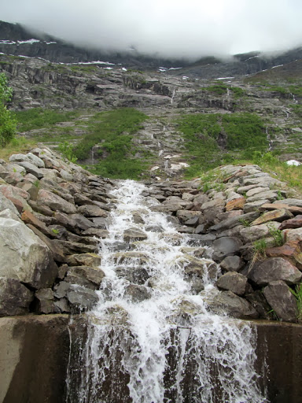 Опасное соседство На какое-то время остановились возле
автобусной остановки посмотреть трек. Выглядела она одиноко и
угрюмо. Любопытно, что около, вокруг, на ней не было никакой
дощечки с расписанием... и скамейка тоже отсутствовала, хотя и
предполагалась. Да и как “говорил” путеводитель, в некоторых
районах автобусы могут ходить раз в неделю, поэтому
рассчитывать на этот вид транспорта особо не
стоит. Недалеко от нее отъехав, на Лёшином велике
спустило колесо, мы сошли на обочину заменить камеру, в горку
навстречу поднималась неспеша суховатая бабуля с велосипедом
под руку, такая седая и старенькая. Приблизившись, обратилась
к нам на своем языке, а когда мы ничего в ответ не ответили,
задала вопрос по-английски: что у вас за проблема? Вот так
было изумление! Мы объяснили, что случилось, поблагодарили за
интерес, она уже было собиралась уходить, но повернулась и
говорит: может нужна помощь? Ну и ну! Я даже не скажу, от
чего удивления было больше! От того, что в норвежской глубинке
пожилой человек говорит по-английски или от того, что она
захотела помочь подкачать камеру?! В общем, камеру докачали мы
сами и на таком позитивном моменте продолжили наш путь. В
милом городочке Утне нас ожидала переправа до
Кванндаля От Кванндаля можно было взять
направление на Берген, но мы поехали в противоположную
сторону. И тут стали попадаться довольно обычные для
велосипедиста аксессуары, но довольно в необычном положении.
Они валялись на обочине почти новые. Встретишь единожды,
подумаешь - случайность, но когда это через каждые 200-300 м,
тут уже какая-никакая закономерность: фляг встретили штук 10,
а то 15, перчатки, очки, а тюбиков от гелей - как грибов после
дождя! Через некоторое время начался серпантинный подъем
где-то на 200 м. Видимо это гонщики подкреплялись и
одновременно освобождались от балласта перед рывком к финишу
или лишь перевалу... Впрочем, история об этом умалчивает Город Восс приближался к нам, точнее мы к
нему) Километраж был намотан приличный и пришло
время встать на стоянку. Мы заехали во что-то отдаленно
напоминающее городской парк, отыскали подходящее местечко и
поставили палатку. Обувь оставили сушить на деревьях После похода на Язык Тролля она была насквозь
пропитана водой от талых снегов. |
9 июня. День девятый “Снежный”
Общий километраж -
77,5 км: чисто вело
Маршрут:
Voss-Vik-TveitКогда проснулись и
выглянули из палатки, по дорожке уже прогуливались жители
городка. Редко, и все равно как-то было не по себе. Поэтому
долго не валяясь, мы собрали пожитки и поехали к великолепному
водопаду Tvindefossen, до которого оставалось всего 12
км. Дома, в Минске, трек был проложен не по магистрали
вдоль реки, а в объезд, по холмисто-утомительной местности.
Без предварительной разминки по плоскачу, организм был явно
огорчен и не очень хотел крутить педали вверх, поэтому в
некоторых местах я толкала велик рядом с собой и была совсем
не оптимистичной персоной) А Лёше хоть бы что, у него где-то в
потайном месте явно находится вечный двигатель, неутомимый
моторчик! Но виды!! Виды были хороши! Остановилась запечатлеть альпийский пейзаж
с коровками прям как из рекламы шоколада Milka или Alpen Gold.
Но словила только один не совсем удачный кадр, т.к. при моем
приближении коровки стали пугливо кучковаться, а один так и
вообще убежал в кусты Водопад Tvindefossen является одной из
самых посещаемых достопримечательностей Норвегии и
неудивительно. Месторасположение у него очень удобное: здесь
мы встретили и несколько тур.автобусов с путешествующими
пенсионерами и банду байкеров, и одиночных туристов на авто.
Но у Вики своя версия, мол, в конце 90х была выявлена
омолаживающая сила водопада, в особенности для сексуальной
активности и именно поэтому его посещают около 200 тыс.
туристов в год Но нас он почему-то не очень впечатлил…
Красивый, каскадный, живописный, но… не знаю. Затем мы преодолевали 63 км относительно
равномерного подъема со 100 до 1000 м и скоростного спуска
почти до нуля. Жилые домики горнолыжного курорта отдаленно
напоминали Хоббитшир) Но не всё так было беззаботно, впереди
маячили “зигзаги” серпантина! Хорошо, что их насчитывалось всего 5!
Заветная цифра! А дальше с горочки - Yahooo! Сверху вид был красив! Но перевала после подсчитанных зигзагов не
последовало. Вздох разочарования и дальше только неопределенно
долго вверх-вверх-вверх... Горы были еще укрыты белым или
лучше сказать долматинестого раскраса покрывалом, словно вот
только-только наступила весна… Не покупаешься  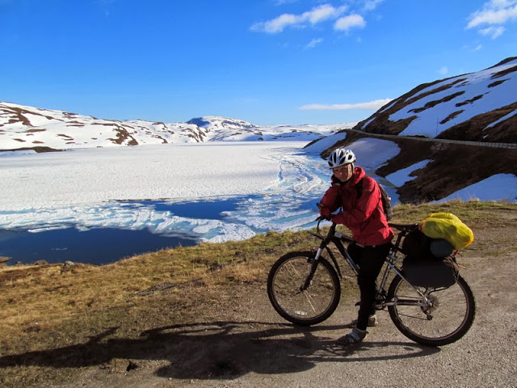 Было жутковато, неужели дальше только так:
снег, потоки неудержимых ручьев, ветер и марсианские полуживые
пейзажи?! Нет и нет! В конце туннеля всегда будет свет!
В видео это замечательно просматривается. При выезде из
тоннеля ты попадаешь на зеленую планету! Вокруг всё не только
живое, а яркое, сочное, разное! Ура! Как же хорошо и уютно на
этой планете! Спуски в Норвегии, как и подъемы, затяжные!
Летелось нам со свистом! Вдалеке, кстати, виднелся, городок
Вик. Мы были нацелены на посещение очень уникального
культового памятника - деревянной церкви 1130 г. Хопперстад
ставкирхе, одного из символов Норвегии, встречающегося на
магнитах, майках, кружках и т.п. вещах, наравне с фьордами и
троллями. При строительстве таких храмов был использован опыт
строительства кораблей! Для поддержания сохранности церковь
покрывается вручную слоем дёгтя. В её отделке сочетаются
христианские и языческие мотивы. 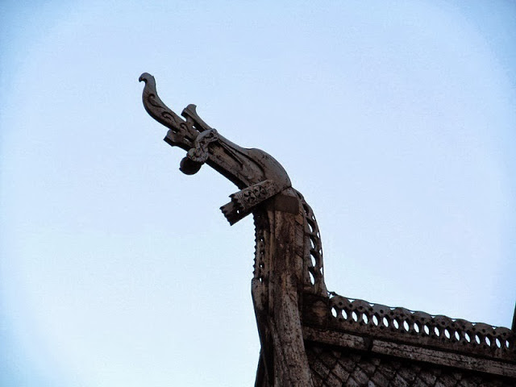 Вот какое описание дает им Иван Ефремов в
своем рассказе “Последний Марсель”: "Казалось, что на один
дом насажен другой, меньший, а на этом точно таким же способом
сидел ещё меньший, с четырёхгранной крышей, оканчивающейся
заострённой башенкой с высоким шпилем. Здание украшали
железные флюгера в виде голов драконов с раскрытой пастью и
высунутым тонким языком. Удивлённый странной архитектурой,
Ильин долго всматривался, пока не различил небольшие кресты.
По-видимому, это была старинная норвежская церковь. Дерево
почернело от времени, и угловатая, устремлённая вверх форма
здания резко выделялась мрачно и угрожающе..." Впитав
дух древности, мы покрутили в кемпинг, по пути купив еще один
газовый баллончик, которым так и не пришлось воспользоваться и
он остался на норвежской земле, в аэропорту Осло. В кемпинг
мы попали уставшими, хотели снять домик, но на рецепции никого
не было, как в общем-то и постояльцев. Выбрали полянку у воды
и в лучах закатного солнца, уснули. |
10 июня. День десятый “Фривольно-ленивый”
Общий
километраж - 58 км: 52 км вело и 6 км паром
Маршрут:
Tveit-кемпинг Hov
HyttegrendПроснулись мы довольно
поздно, часов в 10.00. Лёша пошел в душ, а я продолжала
валяться, фотографируя вид “из окна” нашей
палатки. Сегодня мы никуда не хотели торопиться,
хотя километраж на день был заложен в 81 км с двумя перевалами
в 600 и 700 м! Но спустя 10 дней нашего путешествия не было ни
одного дня “отдыха”, как ни странно это писать и читать. И
организм решил устроить бойкот путникам. Мы всё делали
замедленно. Кемпинг был отличный, даже не хотелось
уезжать! Кухня была оборудована не только плитой и кухонной
мебелью, здесь был и чайник, и скороводки, и кастрюльки, и
даже подсолнечное масло. На рецепции по-прежнему
администратор отсутствовал и даже по оставленному номеру
телефона никто не отвечал. Но надо было выдвигаться в путь и
так как кемпинг нам очень понравился, мы оставили плату за
ночь в ящичке для ключей, который напоминал
почтовый. Кое-как успели на паром в 11.30, следующий
был бы только через час. На этот день у нас почти не
осталось еды, но времени заезжать в более-менее крупный город
Balestrand с “крюком” в 18-20 км у нас не было. Любопытно, что
даже имея при себе деньги, в Норвегии не всегда найдешь, где
их потратить. На протяжении 50-70 км может не повстречаться ни
одного магазина или заправки. Поэтому машина является здесь
лучшим другом человека Мы крутили вперед, и как всегда по сторонам
открывались велоколепнейшие пейзажи! Леса в Норвегии много и в некоторые местах
его нещадно вырубают! И потом посреди него встречаются вот такие
плеши Взбираться по долгим серпантинам уже стало
привычкой Упорно крутя педали вперед и только вперед! Благо
погода замечательна! Захотел пить - почти каждые 50-70 м
мини-водопадики. Остановился, напился взахлеб,
конфету-сосульку за щёку и вверх, вкручивать! И вот мы на вершине перевала. Любуемся!
Лепота! Снежных дорожных стен в Норвегии не встретили… Эх!
Зато пару раз встречали длинные-предлинные линейки,
измеряющие, видимо, высоту этих самых снежных
стен. И опять зима и озера, покрытые тонкой
корочкой льда… Но, господа, красиво! Самое начало дня задало настроение лености,
покоя, неспешности. Мы решили отобедать тем, что оставалось
в наших уже почти опустевших запасах: норвежским аналогом
роллтона китайского происхождения, орехами и чаем с сахаром и
курагой) Солнце скрывается за склон. Вечереет. А
впереди 30 непростых километров. Неподалеку от нашего столика
прогуливается пожилая пара. Мужчина-усач улыбается, и в глазах
поблескивает нескрываемый интерес. Пенсионеры в Норвегии
путешествуют в большинстве своем на трейлерах, либо группами
на больших тур.автобусах и такой вид транспорта, как
велосипед, да еще и груженный, как ишак, не может остаться без
внимания) Это немец, такой дружелюбный и приветливый.
Он плохо говорит по-английски, но очень участлив и
заинтересован нашим путешествием. Много расспрашивает,
рассказывает о себе. К нам подходит его жена и приветствует
нас на ломаном, но русском! Вот это да... Столь непривычно за
столько дней услышать родную речь от иноземца! Улыбка
растянута до макушек ушей! Приятно и даже не передать
словами. Мы пообщались о том, о сем. Их очень
впечатлила Атлантическая дорога - да-да, слыхали о такой и
видели на снимках, но жаль, не в этот раз, прокатимся по
ней... Они сказали, что сегодня приехали из Гейрангера, 4
часа пути до этого места. А нам, стыдно признаться, долгих 4
дня) Уточняем у них пару вопросов по карте. И выясняется, что
по дороге, которая идет в объезд длинного туннеля,
запрещенного для велотранспорта, закрыто движения до июля, да
и вообще июль и август единственные месяцы ее
функционирования. С одной стороны, это нам на руку, с другой -
дорога то красивая, опасная, классная! Но, как было замечено
ранее, хоть риск дело благородное, но не в этом путешествии,
крайне утрамбованном по срокам. Решаем часть пути преодолеть
на пароме! Они же нам подсказали кемпинг поблизости,
что он хорош, как по цене, так и по качеству. Раз карты так
хорошо легли, что 30 км можно оставить на завтра, решили
остановиться в нем! И заодно проверить, что для немца значит
недорогой и хороший) А место рядом с кемпингом было
примечательно необычайным по мощности и живописности
водопадищем! Кемпинг оказался и вправду хорошим,
недорогим и уютным. Но малопригодным для установки палатки.
Поэтому решили, что сегодня определенно мы будем спать
по-барски - на кроватях! На рецепции снова было пусто, но оставлена
записка с номерами свободных домиков и инструкцией, как
следует действовать. Следовало выбрать понравившийся домик, в
дверь которого вставлен ключ, и оплатить, когда нас найдут или
мы найдем кого-то из администрации) Домик изнутри вполне
так себе: стол, стулья, кресло, диванчик, двухъярусная
кровать, шкафчики, микроволновка и небольшое зеркальце. И
всего за 250 крон. А снаружи просто сказка! Идиллия! Домик на
сваях, деревья на крыше и вокруг, Лёша, настраивающий
велосипеды, и приглушенный шум водопада. Прелестно, прелестно…
|
11 июня. День одиннадцатый
“Солнечно-восторженный”
Общий километраж - 92км и всё
вело
Маршрут: кемпинг Hov Hyttegrend - Vassenden - Skei -
ByrkjeloКак начать этот день! Думаю,
что нужно сказать СПАСИБО за погоду. Это удача! В этой стране
и столько Солнца. Отчеты, фото- и видео-, документальные
фильмы - угрюмость, серость, дождь, пелена туманов… А у нас
Солнце, да еще и теплое) Тепло распрощались с нашими
добрыми вчерашними знакомыми, а провожали будто родных! И
покрутили навстречу прекрасному! Слов будет за этот день
немного, только изредка, посему фото По пути заехали не в один, а сразу в
несколько продуктовых магазинов чтобы не попасть впросак, как в прошлые дни, когда
магазинов на пути не встречалось вообще. У магазина на себя
обратила внимание одна пожилая пара. Поразил в ней вид
старика. Он выглядел словно иссохшее древнее дерево, сгорблен,
худощав... Но в яркой красной кепке и с благодушной улыбкой.
На первый взгляд ему можно было дать 99 лет! Но полное
удивление и в тоже время восторг наступили тогда, когда он сел
в машину, завел ее и поехал! По мне так это чудеса! Еще мы
проезжали так называемый скансен - музей под открытым небом,
но необитаемый музейными сотрудниками, несмотря на ранний час
и будний день, хотя может лишь по нашим меркам. Поглядели в
окна, ну точь-в-точь, как наши Строчицы. Покушали черешни и
покатили дальше.  Отголоски Атлантической дороги. “Перешеек”,
сокращающий дорогу. Напрямик, почти по воде. На перешейке Еще одним чудом дня была долина,
незаполненная водой!!! Обычно то мы ехали по волнообразной
кромке фьордов, горных озер или брали перевалы. А тут плоскач
посреди норвежских гор! Невероятно! И третьим чудом дня был необычный кемпинг
на берегу озера. Во-первых, он был самым дешевым в нашем
путешествии - 75 крон за палатку и двух персон, и во-вторых, в
нем был бесплатный ( !!) душ. Такого кемпинского счастья
мы еще в этой стране не видывали  Здесь постирались, приготовили “пакетного”
супчика впервые в нашей жизни не без помощи хозяйки кемпинга
(инструкция была только на норвежском) И скоротали приятный вечер за чашкой
горячего чая и шоколада |
12 июня. День двенадцатый “Ледниковый”
Общий
километраж - 80 км и всё вело
Маршрут: Byrkjelo - Utvik -
Olden - Gryta CampingКогда проснулись, в кемпинге уже не было
никого, все автокараваны разъехались, а хозяева с собакой
отправились за покупками. Мы же выдвинулись из кемпинга часов
в 12.00, а то и позже... Отпуск ведь! 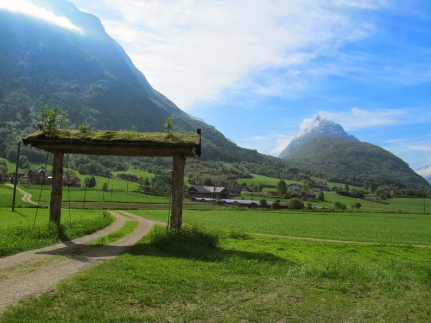 Сегодня день был бы обычным днем в Норвегии
по рельефу, пейзажам и всему остальному, если бы… не
достигнутая к 22.00 цель - Ледник
Briksdalsbreen. Самым сложным и одновременно привычным
в этот день предстояло преодолеть перевал) По пути к нему
не остались незамеченными композиции авангардистов. В
Норвегии, как и во всей Европе, любят такое искусство - с
изюминкой, с закавыркой. Перевал в 600 м дался относительно легко, а
вот спуск заставил понервничать. На удивление большой поток
машин, автобусов, трактора, овечек при приличной крутизне
поворотов. В Утвике мы перекусили, полюбовались
цветущими кустами, церквушкой... И вот начиная с этого региона стали
попадаться на глаза огромные лайнеры, которые доставляют
организованные потоки туристов в прекрасные уголки
Норвегии. На самом деле чарующее зрелище! Такая
плывет себе махина, бороздит просторы фьорда, невозмутимая и
вызывающее восторг и чувство хотения “прокатиться” на ней с
ветерком! Прикатили мы в Олден, а оттуда вглубь 25 км до
ледника вдоль красивого озера Oldevatnet с перемычкой
посерединке, из которого вытекала мощная бурная
река. По дороге попадалось множество мест ночевок
и мы про себя их для себя отмечали. Их количество можно
оценить на этом снимке Крутилось быстро, ведь мы спешили увидеть
такой удивительный объект на планете! Пощупать голубого льда!
Но завидев издалека это чудо, пыл охладился мгновенно. Это
была какая-то еле заметная пипка, краешек, свисающий с горы.
Ну не это я, да и Лёша тоже ожидали увидеть! Как говорится:
Разочаровались? А нечего было очаровываться! В общем стоим мы вступоре, что делать?!
Даже и ехать за таким дальше не хочется, чтоб задрав голову
посмотреть на этот пресловутый голубой лёд. Но решаем не
оставлять дело на полдороги! По приезду на место старта на
пешем пути к леднику оказалось, что мы не тот ледник сначала
увидели. На самом деле здесь их несколько и все они являются
рукавами самого крупного ледника континентальной Европы -
Йостедальсбреена. Наш путь лежал к
Бриксдальсбреену, к нему вела живописная тропа мимо
валунов, грохочущего водопада и работающих
норвежцев. В столь позднее время - около 21.30
туристов замечено было только два и то, уже возвращающихся с
ледника. И вот, спустя минут двадцать пешки, пред нами он
предстал - красавец, хоть и покоцанный временем, но всё же! В
2004 году он был таким. А сейчас… 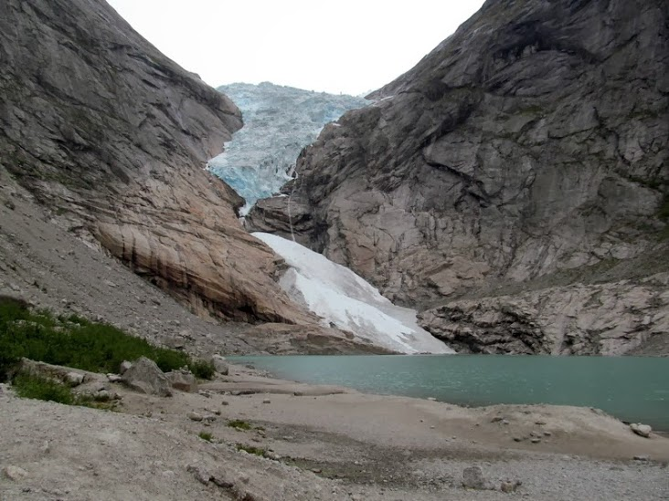 Что ж творится в нашем мире? “Спасибо”
промышленной революции и иже с ней... Очень показательные
фото находятся по этому адресу - http://glacier.nve.no/viewer/GPP/en/nve/GlacierPictureInfo/2316и
http://www.forskning.no/artikler/2011/januar/275929В
каком-то отчете наткнулась на фразу: “Напуганный разговорами о
том, что Бриксдаль уже разве что не растаял, я решил туда не
ехать, а посетить ледник Nigardsbreen.” Но мы были рады
увидеть хоть и такой, но все-таки ледник! Ура! И не смотря на эту воспрещающую табличку,
мы перелезли через ограждение и осмелились прогуляться и
прикоснуться хотя бы к снежку. Плавающие льдинки были любопытны и Лёша не
преминул одну из них попробовать на вкус:) Вдоволь насладившись ледником, мы
отправились на ночлег в кемпинг Gryta и к половине
двенадцатого были на месте. |
13 июня. День тринадцатый “Исследовательский”
Общий
километраж - 71,5км чисто вело
Маршрут: Gryta Camping -
Loen - Stryn - Flo - StrynНа утро мы познакомились с незаурядным
обитателем здешнего кемпинга. Им оказался белоснежный козел с
витиеватыми рогами! Когда вчера перед сном я ходила в уборную
и увидела издалека этого восседающего непоколебимого зверя на
камне, я подумала - галюн, натуральный галюн! Но когда он
пошевелил ушами, оставаясь всем туловищем в покое, я подумала,
что это все-таки не галюн, а реальное живое существо, но
проверить свое предположение решилась только на
утро. А он был дружелюбен и кормился с рук До Стрына было около 30 км, а оттуда
мы решили найти таки приключений на свою голову и поехать
через небольшой поселок Фло. OpenCycleMap “говорила”,
что от него есть проезжабельная дорога до Hellesylt,
откуда на пароме мы планировали перебраться в
Гейрангер. Вообще, по изначальному плану мы должны
были покорять в этот день перевал в 1100 м и двигаться по
старинной дороге, которой уже более 100 лет - Gamle
Strynefjellsvegen, в объезд трех плавно перетекающих друг
в друга туннелей общей протяженностью около 11 км. Подробнее о
дороге можно почитать и посмотреть здесь http://www.nasjonaleturistveger.no/en/gamle-strynefjellsvegen
и здесь - http://www.nrk.no/sf/leksikon/index.php/StrynefjellsvegenНо
мы доверились совету наших знакомых немцев и не сунулись на
эту прекраснейшую дорогу, т.к. по их словам на ней во всю еще
лежали сугробы снега И в туннель нам тоже было категорически
нельзя. А приключений то хотелось, вот мы и поехали во Фло.
Хотя моё чутье подсказывало, что асфальтовой дороги от него
явно не будет, т.к. на тур.картах, да и на Гугл карте она не
прослеживалась. По дороге был замечен необычный водопой,
датированный концом 19 в. Открывающие пейзажи невольно заставляли
останавливаться и замирать 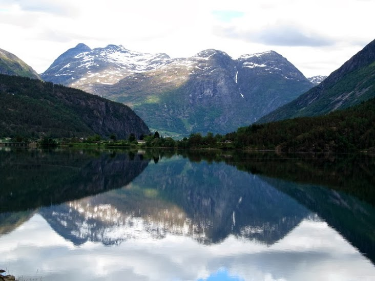 По пути к Фло дорога стала практически
однополосной и это было явно плохим знаком) С противоположного
берега озера виднелась прямая дорога на Гейрангер, по которой
не суждено было прокатиться в этот раз. И вот мы во Фло - маленькая деревушка домов
на 10, причем тупиковая в асфальтовом отношении. Асфальт
заканчивается у последнего дома, а дальше тропка из щебня
скалистых пород и запретительный знак, что, мол, проезда нет,
т.к. частная территория. Вот и приехали, вот и нашли
приключений на свою голову! Испытав эту щебёнку своими ногами и
гружённым задним колесом, подумали и решили, а ну его! Времени
до позднего вечера было не так много, оставалось зайти еще в
тупик этой щебенистой дорожки и всё, весь план
насмарку! Как в той песне получается: “График, у меня есть
график, а все что не по графику - нафиг, нафиг.” Плюс к
исчезнувшей дороге стал накрапывать дождик, поэтому мы
возвращаемся в Стрын и решаем впредь ехать по проверенным
дорогам, хотя бы Гугл картой) Выезжая из Фло увидели такую
картину Указатель на пешую тропу в… суровый норвежский
лес! Хороший, бойкий, хоть и кратковременный
дождь, нас всё-таки настиг на полпути к Стрыну. Дружественно и
взаимно поприветствовали компанию пожилых велоспорстменов,
бодро и весело вкручивающих навстречу! Им хоть бы что: ни
дождь, ни мороз, ни ветер их не остановит! При въезде в
Стрын свернули в ближайший кемпинг и взяли домик, т.к. совсем
не хотелось расставлять палатку в дождь и держать велики с
вещами на открытом месте. |
14 июня. День четырнадцатый “Ремонтный”
Общий
километраж - 24 км: 18 км вело и 6 км пешки
Маршрут: Stryn
- GrodasC утра мы проехались по
Стрыну, зарулили в продуктовый и отправились в
Hellesylt, чтобы оттуда доплыть до долгожданного
Гейрангера и посетить его достопримечательности, хотя
еще одним большим ожиданием в нашем путешествии была конечно
же Лестница Троллей - потрясающая серпантинная дорога
недалеко от Ондалснеса! В Стрынском магазине впервые
увидела вот такое ноу-хау! Электронные ценники! В норвежских
магазинах редко встретишь продавцов. Кассир может одновременно
выполнять несколько работ: раскладывать товар, пробивать чеки
и др. Мясо всё уже расфасовано, хлеб нарежет булкорезка.
Еще приятно порадовал вид витрины.
Эстетично. 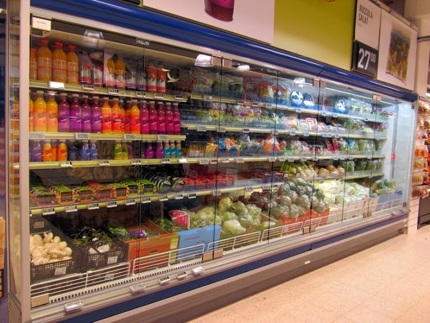 Фирменные магазины норвежской одежды Moods
of Norway оригинальны в рекламе Хотя на календаре было 14 июня... во дворе
была еще ВЕСНА! Недалеко отъехав от Стрына (около 7 км), у
Лёшиного велосипеда заднее колесо стало издавать жуткие
устрашающие звуки. Вообще они начались еще вчера, но не были
такими жуткими. “Доковыляв” до заправки, Лёша решил заняться
починкой. 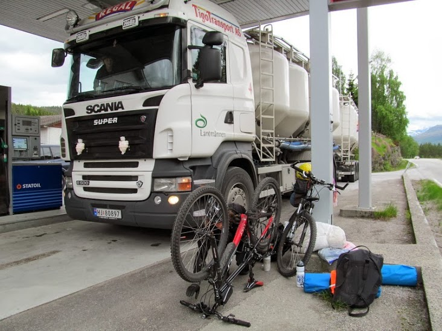 А я помочь не могла и фотографировала
заправку Спустя полчаса мы сделали еще одну попытку
покрутить педали, уже с горочки. Я ехала за Лёшей. Скажу
одно: ехать было стрёмно! Так и готовишься, что сейчас колесо
отлетит и вдарит прямо в тебя! И загодя прикрываешь глаза и
держишь голову в стороне от предполагаемого удара. Колесо
стрекотало, что дурное, и главное, что мы не могли определить
причину стрекота. Так ехать дальше было нельзя, да и опасно
для жизни! Устроили еще одну мастерскую на автобусной
остановке. Лёша колдовал, а я в это время грустила и
рассматривала разные варианты, как дальше нам поступить: и
Гейрангер ведь хочется увидеть, и Лестницу
Троллей - путешествие без них получится неполноценным.
Ближайшая мастерская может быть только в Стрыне, а через
полдня суббота и это значит, что починить вел мы сможем только
в понедельник. Автобусы ходят редко, автостоп с двумя велами
сложно представить. Может устроить велопешку? Решаем так и
сделать, только не возвращаться в Стрын, а прогуляться около 6
км в Гродас. Идти, конечно, уныло по сравнению с
вкрутом, но тем не менее любое движение вперед уже
хорошо! В Гродасе расположились в кемпинге, который
по совместительству еще выполнял дачную функцию. Сюда на
выходные приезжали норвежцы в свои статичные автокараваны или
минидомики, отдохнуть. Никаких вокруг огородов и цветников,
только зеленые лужайки. Вид из домика Выходов из получившийся ситуации было два:
починить велосипед своими силами или же добраться до
Ондалснеса на автобусе (из Ондалснеса у нас уже был
билет до Осло, а оттуда на перелет до Риги). Я склонялась к
варианту с автобусом, а Лёша был решительно настроен на
ремонтирование. Он предварительно скатался на местную
автостанцию. Она была закрыта и тогда он уточнил информацию на
заправке, а там его направили к водителю автобуса, что, мол, у
них нужно уточнять расписание. Водитель сказал, что автобус до
Ондалснеса недавно ушел, а когда следующий он не знает, и
вообще прямых автобусов из Гродаса нет… Дела плохи. Хозяйка
кемпинга взялась помочь, в интернете нашла информацию, что
завтра будет несколько автобусов до городка Моа, там нужно
сделать пересадку и доехать до Ондалснеса. И еще отправила
смску знакомому водителю, чтобы тот потвердил эту инфу. Но
Лёша задумал своё. Ведь ночь длинная, да и светлая. Сделать
всё, что можно, но починить это чёртово колесо, чтобы
продолжать путь! Я завалилась спать, а тем
временем… “Мне жутко не хотелось заканчивать отпуск
вот так. Я понимал, что пройти оставшееся расстояние пешком –
это серьёзная нагрузка, но и автобус – гадкий вариант. Я был
больше склонен везти велосипеды и делать ночные попытки
исправить неполадку, чтобы хоть часть расстояния по утру
проехать «верхом». И это была первая такая ночь для
попыток. Барахлившее колесо было куплено меньше года назад
в дрэгон-байке. Если с переклюками, тросиками и прочей
трансмиссией я хоть как-то разобрался к тому времени, чтобы
делать «хот-фиксы» в дороге, то колёса для меня работали с
помощью магии, и я мог в неё только верить. Прошедший день показал, что на одной вере
далеко уехать не получается. Отвечающая за велосипедную
механику часть моего мозга думала следующее: «Неприятные
стуки, вибрации, помеха езде скорее всего связана с тем, что
заднее колесо в конец «распоясалось» и трётся об раму, начиная
вращаться не только в необходимой плоскости, но и в той,
которая даёт сильную восьмёрку. При этом со спицами всё в
порядке. Пыльник отходит, это было видно невооруженным
взглядом. Конус его не держал, он проходил сквозь пыльник, и
если закрутить его слишком сильно, начинал тереться о
подшипник, не давая вращаться колесу. Т.е. было нужно зажать
конус, чтобы внутри втулки ничего не болталось, и одновременно
закрепить пыльник так, чтобы он не слетал со своего места и
сдерживал колесо от вращения в ненужной плоскости.» Это всё
была теория, я в ней не был уверен и хотел влезть внутрь,
чтобы понять внутреннее устройство моей втулки. Снял заднее
колесо, скрутил конус, снял пыльник и достал нечто, что с
трудом можно было назвать подшипником. Дело происходило на
крыльце дома, оно было сложено из досок, между которыми было
по 3-4 см пустого пространства глубиной сантиметров 6-7. И вот я достал подшипник, из которого
покатились шарики. Каким-то непонятным образом два из трех
зависли над "пропастью" и через секунды были переложены в
безопасное место. 3й я найти не мог, всё закончилось ещё не
начавшись. Я лез рукой в эти щели пытаясь что-то нащупать, но
безуспешно. Но потом внезапно отвёл взгляд на траву и увидел
3й шарик там. Беда миновала. Кстати, потом, я ещё пару раз их
ронял, но таким же чудесным стечением обстоятельств, они
оставались на досках. Осмотр показал, что мало какие из них
напоминают именно шарики, многие были обтёсаны, почему,
видимо, и вывалились. На них было прилично грязи, пришлось всё
протереть, хотя у меня не было никакой смазки кроме цепной.
Начал процедуру засовывания их обратно, они постоянно
проваливались в щели. Через какое-то время после сгибания
«когтей подшипника» я нашел такую комбинацию щелей и шариков,
которая кое-как держалась и не разваливалась от дуновения
ветра. Я собрал конструкцию втулки, несколько раз искал нужное
положение конуса, пыльник закрепил резинкой, которой
скручивают велосипедные камеры. Что ж, время
пробовать, велосипед был разгружен, но основной-то вес – мой,
для тестирования этого было достаточно. Я хотел проехать около
5км. Это примерно час ходьбы, на велосипеде их можно
преодолеть за ~15 минут, т.е. по сравнению с ходьбой это 45
минут экономии времени, что уже неплохо, хотя была надежда,
что велосипед должен выдержать и больше. Периодически
проскакивал лёгкий стук и вибрация, но в целом он ехал, и это
было хорошо. Я даже пересаживался на багажник, давая бОльшую
нагрузку на колесо, имитируя завтрашний багаж. Я вернулся к
дому и решил ещё поменять покрышки местами, спереди стояла
родная, хоть и не в лучшем виде, но не такая агрессивная, как
сзади, и даже при сильной восьмёрке она бы не задевала перья
рамы, как делала новая. Это забрало ещё приличное время с
нашим маленьким ручным насосом. Заключительный успешный
тест-драйв на 2-3км перед сном. Ночь была удивительной. Я
даже где-то рад этой возникшей проблеме, т.к. проехав почти
весь путь, я впервые увидел ночь в Норвегии. Время было ближе
к 1-2 ночи, но на улице стояли сумерки. Освещения не
требовалось, всё было различимо, на улицах было ни души. Для
питерцев, конечно, ничего необычного, но меня приятно удивило.
К слову, такой мой «ремонт» дал-таки нам
проехать наш путь до конца, хотя и периодически велосипед
пугал меня вибрациями, особенно на диких спусках, а следующий
день я больше смотрел на заднее колесо, чем на дорогу. Тем не
менее, случившееся я больше считаю везением, чем умением. В
прочем, какая разница, будет что вспомнить |
15 июня. День пятнадцатый “Удивительно-прекрасный.
Туристический. Многолюдный.”
Общий километраж - 41 км: 31
км вело и 10 км пешки
Маршрут:
Grodas-ГейрангерА по утру, как в
сказке, колесо было починено и в боевом строю! Лёша оказался
волшебником! Мы перегрузили вещи с Лёшиного велика на мой и
максимально его облегчили. Хоть колесо было в ходу без
потрескивания, но лучше лишний раз перестраховаться. Моя
устойчивость поубавилась во время остановок, но это ничего
страшного. Солнце сияло и мы выдвинулись в путь. До
Hellesylt оставалось около 30 км и как же было
прекрасно ехать и двигаться куда быстрее, чем идешь. Мы
становились ближе к чудесному Гейрангеру все скорее и
скорее. Так выглядит граница между
коммунами До Hellesylt добрались очень быстро,
т.к. от Гродаса был совсем незначительный подъем, а
потом затяжной спуск. До парома еще оставалось время, мы
полюбовались городским водопадом-рекой, впадающим в Гейрангер
фьорд Зашли в большой сувенирный магазин,
полюбовались сувенирами И подошло время садиться на паром.
Стоимость туристической переправы (продолжительность
около 65 минут) стоила 150 крон на 1 человека (около 225 000
руб.). Большие тур.автобусы - 580-900 крон. На теплоходе
есть открытая терраса, есть и закрытые от ветра помещения с
баром и туалетами. Людей неудивительно больше на открытой
террасе, ведь никто не хочет пропустить ни одного
захватывающего вида! Поездку по S-образному фьорду сопровождал
приятный мужской голос, повествующий об окружающих пейзажах,
истории этой местности. Любопытным моментом является
наличие большого количества ферм вдоль фьорда. К некоторым из
них возможно добраться только по воде. Плывущие навстречу теплоходы громко
приветствовали. Наш теплоход Bolsoy, конечно, тоже... просто
оглушительно! Гейрангер фьорд и прилегающие к нему
территории включены с 2005 г. в список объектов природного
наследия ЮНЕСКО. Самыми красивыми и популярными
достопримечательностями фьорда, безусловно являются его
водопады: “Семь сестер”, “Жених” и “Фата
невесты”. Конечно же они связаны между собой романтичной
легендой. Познакомились мы и с нашим завтрашним
испытанием - Орлиной дорогой. Серпантин, который делает 11
крутых витков вверх на высоту 620 м. Дорога была введена в
эксплуатацию в 1955г. У деревушки Гейрангер швартуются как
огромные лайнеры, так и вот такие яхты-"Ларисы") Когда теплоход причалил и мы спустились на
берег, нас тут же "окатила" настоящая туристическая волна,
впервые встреченная в Норвегии: толпы людей, много-много
туристических автобусов, автомобилей с великами на крыше, еще
больше караванеров, толпа спортсменов (сегодня у бегунов и
велосипедистов был марафон), кафе, ресторанчиков. В общем,
движуха! Но оставалось менее половины дня, а так много
хотелось увидеть! Мы установили палатку в местном кемпинге
прямо на берегу фьорда и побежали исследовать местные
природные красоты. Хотели увидеть Сторсетерфоссен -
водопад, за который можно заглянуть и прогуляться туда-сюда,
побывать на смотровой площадке, отыскать язык
Тролля… По дороге встречалось ну очень много велов
на крышах авто А вот афиша того самого марафона. Набор
высоты 1500 на 21 км!!! От марафонцев была слышна даже русская
речь, видимо, он довольно популярен. Чем выше мы поднимались, тем хлеще
захватывало дух! Дорога до водопада была нелегка Но всё это пустяки, когда вокруг такая
живопись! Хоть и тяжко по серпантинам взбираться, но
больно хороши они со стороны Придя к нужному месту не сразу догадались,
где же он расположен. К нему вела узенькая крутая тропка
сбоку Находиться под водопадом было освежающе,
опасно, мокро и волшебно! Ты как-будто проник в мощь водопада,
низвергающегося бешеной силы потока. Засмотришься вниз и можно
улететь и раствориться, как брызги воды. 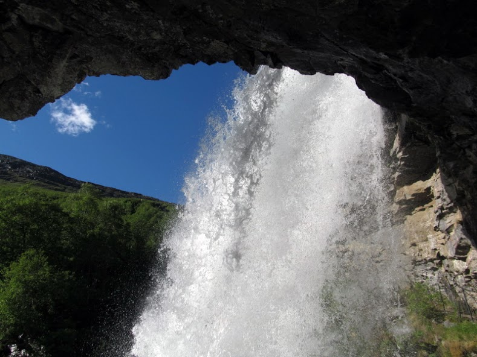 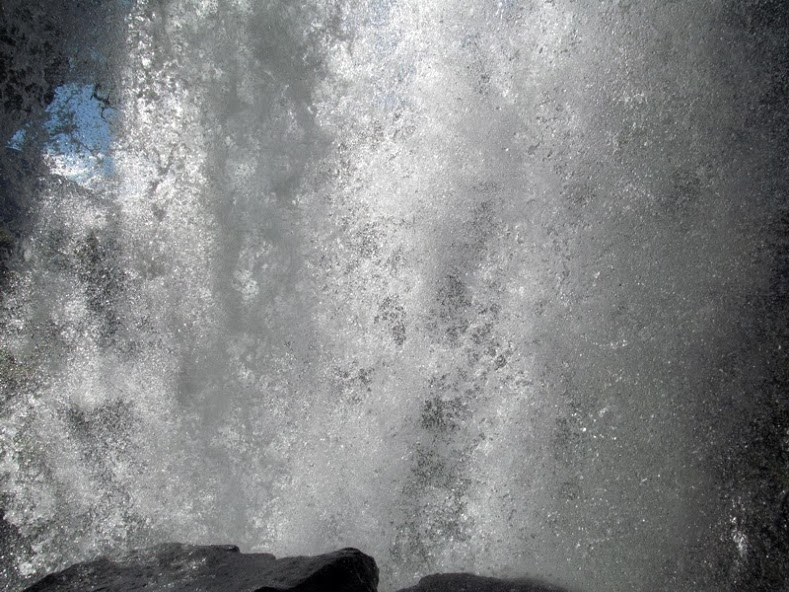 Устатые, но довольные, отправились на
поиски Языка Тролля, для этого нужно было спуститься и
снова подняться. Где именно он находится мы не знали, кто-то
писал, что его непросто найти, но на сайте Винского
есть подробное описание. Пока я развалилась на королевском
кресле и фотографировала, Лёша занимался поисками
Языка. Наш кемпинг и где-то там наша палатка с верными
конями Лёша тоже захотел сфотографироваться, как
принц) А вот и он - Гейрангерский
Язычок Всё задуманное увидено, пощупано,
сфотографировано! Душа и тело удовлетворены, можно
отправляться на ночлег. Спуск не занял много времени. Но
на сегодняшний день сюрпризы не закончились. Вернувшись к
палатке, с нами по соседству расположился вот этот прелестный
автомобиль! Ох и сколько любопытных взглядов он к себе
приковал! Сюпризом, но совсем неприятным, оказался
клещ у безымянного пальца ноги.  Не знаю, как и когда он умудрился запрыгнуть и
обосноваться там, но надо было что-то делать. Наученная
горьким опытом прошлого летнего отпуска (под Инсбруком тоже
поймала клеща и его изъятие в госпитале города тогда обошлось
в 50 евро!), подумала, что нужно звонить в страховую компанию.
В это время Лёша сбегал на рецепцию и уточнил, есть ли
поблизости больница. Сказали, что больницы нет, мед.работники
могут быть только в доме престарелых, куда мы и направились. Я
пока еще не звонила в страховую. Нам открыла двери пожилая
женщина и Лёша ей стал объяснять, чего мы хотим, почему-то
используя слова: жук, кровь, пьет из нее. Он повторил
их раза 3. На дворе было около 10 вечера. Бабушка на нас
посмотрела очень недоверчиво и смущенно и сказала, что они
помощь в таком не оказывают. И посоветовала обратиться завтра
с утра в аптеку. Вот так. Ничего не оставалось делать, как
тянуть клеща самим. Этим ни я, ни Лёша еще не занимались.
Написали смс папе и маме , чтобы они подкинули какую-нибудь инструкцию. И
следуя ей, через минут 10, это пакостливое животное было
успешно вытащено Лёшиными руками. Вот так то, теперь и мы это
умеем делать! |
16 июня. День шестнадцатый “Вдохновляющий”
Общий
километраж - 50 км: 47 км вело и 3 км паром
Маршрут:
Гейрангер - Линге - Валлдал -
GudbrandsjuvetДоброе утро, Дорога
Орлов! Сейчас мы тебя покорим! 11, всего 11 витков, мы ведь и
не на такое взбирались, Лизеботн Роуд - это все 27 и в самом
начале путешествия. Поэтому такое препятствие преодолеем, надо
только собраться с духом! Разогрев проходил по относительно
пологой береговой линии. И вот начинаются затяжные медленные
подъемы. В самом начале посчастливилось наблюдать такую
картину: впереди едет Лёша, за ним туристический автобус, а за
ним две машины и едут также не спеша, не сигналя, а терпеливо
в Лёшином темпе, пока слева не появляется возможность обгона.
Вот это выдержка, вот это культура! Ну а дальше всё как
обычно: монотонный вкрут-вода-отдых-конфета и мы у смотровой
площадки Eagle bend. Конечно, мы не воспарили как орлы!
Но покорили этот серпантин И вот он - безумной красоты
пейзаж!! 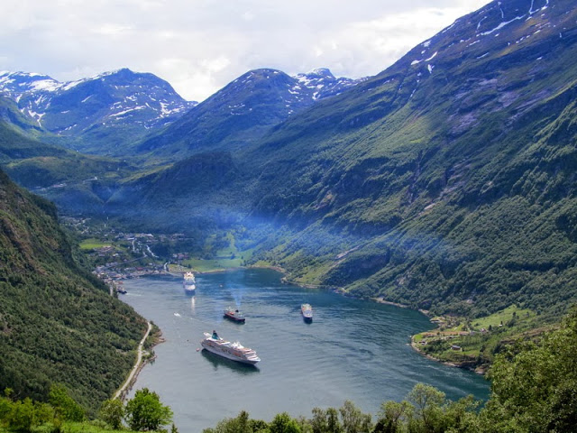 Дальше всё проще: туннель, скоростной спуск
и прямая дорога С некоторыми препятствиями а-ля “Мы в
Индии” После паромной переправы стало немного
грустно. Путешествие подходит к концу. Больше не будет
туннелей и пересечения фьордов на пароме, покорения непростых
серпантинов… скоро мы будем дома. Перекусываем в Валлдале фаст-фудом. Лёшина
тарелка с мясом стоит 135 крон (около 200 тыс.руб.), моя
тарелка с наггетсами 100 крон (около 150 тыс.руб.) А ведь ничего особенного, фаст-фуд как
фаст-фуд. Движемся к каньону
GudbrandsjuvetGudbrandsjuvet - это одно из самых
зрелищных мест. Буйная и неудержимая река создает невероятное
ущелье. Река вытекает из нескольких мест в породе, создавая
уникальную картину. Эффекта добавляет индивидуально
разработанная для этого места площадка. Сочетания стекла и
железа в создании переходов, проходов, сидений, ограждений.
Сделанное рукой человека, но удивительным образом
вписывающееся в окружающее пространство. Невероятное место, в
котором можно находится час, два, а то и больше. 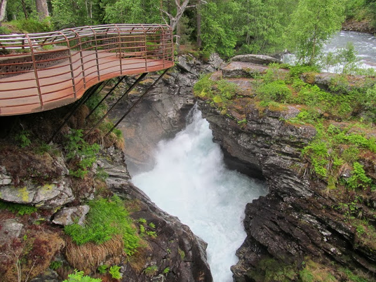 Кемпинг носил одноименное название и
находился в 10 м от каньона. Заночевать решили здесь.
|
17 июня. День семнадцатый “Долгожданный”
Общий
километраж - 46км: только вело
Маршрут: Gudbrandsjuvet -
Лестница Троллей - ОндалснесУтренний душ.
Что может быть лучше, чтобы начать новый день! Наверное, чтобы
утро показалось особенно бодрящим и заряжающим, душ должен
быть ... бьющийся током , как и оказалось в этом кемпинге. Сначала я не
поверила такому счастью. Дотрагиваясь до регулятора воды было
ну очень неприятное ощущение жжения. Верить я отказывалась,
думала, может просто трубы сильно вибрируют. Взяла мочалку и
пыталась отрегулировать напор воды с помощью нее, но
безуспешно, уж больно неприятно, когда тебя пронизывает
пренеприятное колющее чувство. Зарядившись энергией, как
батарейка Энерджайзер , на все 100%, мы отправились в этот пасмурный
день к Лестнице Троллей. Наконец-то! Накрапывал
дождик и набиралась высота с 200 до 850м, но на душе было так
прекрасно. Да, и сегодня было тяжело ехать в горку. Но
мысли только положительные, туманные пейзажи хороши.
Наслаждаемся последними велоднями в этой невероятной по
красоте стране!  Дорога эта очень популярна среди байкеров.
Встречались как целые банды, так и одиночки  Из встречающихся трейлеров пенсионеры
весело махали нам и показывали большой палец вверх,
подбадривая нас, чтоб мы не унывали в этот угрюмый день, а
может просто посылая знак, что дальше будет еще
круче! Преодолели перевал. Всё. Больше вверх не
будет, теперь спуск до нуля. И как раз на время спуска облака, повисшие
над перевалом и после, решили слить накопившиеся осадки. Вместе со встречным ветром это оказалось еще
тем тандемом! Едешь на ощупь, ни черта не видно! Руки в
коротких перчатках сковало леденящим холодом, ноги в сандалях
окочурились и побелели, а лицо мокрое, но счастливое и в
улыбке, мысленно представляя себя со стороны. Ох уж эти
велосипедисты, такие велосипедисты! Различаем большую автостоянку и понимаем,
что вот и мы добрались до заветной Лестницы тех самых
Троллей. Тормозим, переобуваемся, утепляемся, согреваемся
в сувенирной лавке и… восхищаться! Не
терпится! Она! А это то, что вокруг, предваряет ее
появление перед очами, помогает лучше разглядеть и
сфотографировать с самых-самых ракурсов Сувенирные "лавки" 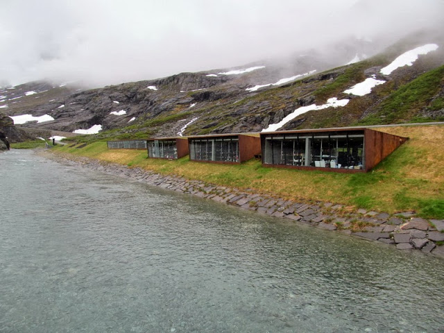 Ресторанчик у воды И вот мы сейчас скатимся с нее и
превратимся в маленькие пещинки. Но нужно быть аккуратным, в
такую погоду и с такими разворотами-поворотами. Лёша будет
снимать спуск на камеру и он поедет без остановок, а мне ж
нужно пофотографировать, да и пальцы размять после торможения
в полную силу. Итак, приготовились… ПОЕХАЛИ! Погодка
само то , мало чего видно, скользко и мокро, на поворотах
ой каким бдительным нужно быть! Обзор ограничен из-за
свисающего капюшона и фонтанирующих брызг из-под переднего
колеса, хорошо, что и встречные машина едут очень осторожно,
не торопясь, да их и немного на наш спуск
пришлось. Захватывающие картины Лёша - покоритель Лестницы Троллей
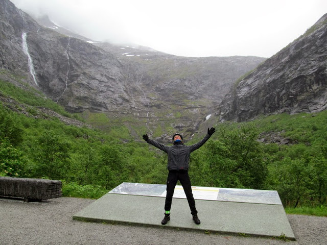 У спуска стоял трейлер, из него к нам
выбежал немец, стал расспрашивать об ощущениях, предложил нас
сфоткать и чашечку горячего кофе. Пожелал удачи и очень
порадовался за наш спуск и в целом путешествие! Здорово! Эти
кратковременные беседы, заряженные радушием, улыбками и
добром! Теперь остается докрутить до Ондалснеса, всего
20 км пути. По пути замечаем в фотоаппарат неординарных
ёлочек И обедаем в придорожном кафе на
автобусной остановке В Ондалснесе дождь не прекращается,
пережидаем его под мостом. Нам нужно заехать на жд станцию,
выкупить билеты на велы до Осло (их стоимость составила 366
крон, что в пересчете на наши около 550 тыс.руб!, значительная
сумма), закупиться в магазе и найти ночлег. Набережную
города охранял очень правдоподобный злой тролль Заночевали в кемпинге - огромном, с
просторной кухней, уборными и играющей приятной музыкой в
них. |
18 июня и 19 июня. День восемнадцатый и девятнадцатый
“Приключения продолжаются!”
Общий километраж - около
25 км: вело + осмотр Осло на своих двоих
Маршрут: Ондалснес
- Домбасс - Осло - аэропорт
GardermoenПоднялись спозаранку. Поезд в
Домбасс отправлялся из Ондалснеса в 7 утра. Есть в раннем
подъеме своя прелесть, когда город, его жители еще спят и
природа только-только потихоньку пробуждается. На
территории кемпинга  Машина мультиспортсмена, никак не иначе
 Утренний Ондалснес        Поезд небольшой, специальных мест и
креплений, как в немецких поездах, для велосипедов нет. Он
следует вдоль реки Рёума, прилично набирая высоту (до 659 м) и
виртуозно огибая на хорошей скорости повороты, поэтому
велосипеды приходится придерживать, иначе они предпочтут
принять положение лёжа   Вид из окна    В Домбассе были около 9.00.  До пересадки 2 часа. Хочу скататься в
город, чтобы сфотографировать заинтересовавшую церквушку,
которую проехали на поезде мимо. Лёша кое-как отпускает, он
ехать на ее осмотр совсем не желает. У нас строгий уговор на
время встречи. А вот и она    Возвращаюсь к оговоренному времени.
Ожидаем... Ожидание затягивается. Какое-то объявление на
норвежском. Чтобы это значило. Мы с велами под руку в
недоумении ходим по станции. К нам подходит женщина с
туристским рюкзаком на спине, тоже путешественница.
Интересуется, не поезд ли в Осло мы ожидаем. Отвечаем
утвердительно, на что она сообщает, что из-за аваланча близ
Тронхейма (про себя думаю: аваланч - это же мой велосипед,
никогда не задумывалась о его значении ), откуда должен был отправляться наш поезд,
железнодорожное сообщение приостановлено на неопределенное
время и нас повезут в Осло на автобусе. Вот те на! Радость
то какая! А я переживала, что на всем мы в Норвегии
покатались, а на автобусе нет Вообще, для перевозки велов этот вид
транспорта не очень уважаю. Но ничего не поделаешь.
Трепетно грузим наши велы в багажный отсек, занимаем места
и трогаемся.  На этом история с аваланчем не
заканчивается. Мы уже было заснули, ведь дорога до Осло
долгая, около 5 часов. И автобус движется медленнее поезда,
делая заезды на жд станции и собирая таких же недождавшихся,
как и мы, поезда. И на одной из таких станций, в Лиллехаммере,
остановка затягивается. Где-то это уже было. Из окна видим, что люди столпились около
водителя и ожидают какой-то информации. Потом все резко
начинают забирать вещи из автобуса и уходят на жд станцию.
Водитель по-английски не говорит, снова выручает знакомая
норвежка. Сообщает, что сейчас мы должны сделать пересадку на
поезд, который едет в Осло. Окей. Поезд - это
хорошо. Загружаемся в поезд. Занимаем места, расслабляемся.
Ненадолго. Подходит кондуктор проверить билеты,
спрашивает, мы до Осло. Да-да, отвечаем мы ему. Он говорит,
что тогда необходимо будет сделать пересадку на автобус,
который подвезет нас около 10-15 минут к другой жд станции, на
которой мы сядем на поезд и на нем доедем до Осло. Я смотрю на
него и глазами говорю, это ведь не может быть правдой, да?
Думается, а не пятница ли сегодня тринадцатая?
Нет, вроде среда и уже 18е. Женщина, впереди сидящая,
поворачивается и с широкой улыбкой, пожимая плечами,
произносит: It’s a bad day! Угу, еще бы!.. Нас находит
та самая норвежка и уточняет, в курсе ли мы, что еще должны
сделать пару пересадок, где и куда нам идти. Мы благодарим ее,
говорим, что к сожалению, да, мы в курсе. Она улыбается и
дружественно произносит: До встречи в Осло! Надеемся, что
это случится! Прибытие было запланировано на 15.03. Минуты
на осмотр Осло бесследно таят… Уже задержка в полчаса. Прибыв на станцию, нужно пройти 200 м до
автобусов. Причем всем пассажирам поезда, которые будут
доставлены 4 или 5 автобусами до следующей станции. Никто
не устраивает воплей, разборок, кондукторы крайне вежливы,
спокойны, услужливы. Громко поясняют, куда направляться,
помогают мамам с колясками. Людей очень много. Беспокоимся
за велосипеды, поместяться ли они. Но водитель, увидев, что
у нас такой багаж, заранее припасает место. К тому же
велосипедисты - это не только мы с Лёшей, на одной из станции
добавился еще один. Теперь нужно погрузить три
вела.   Собрат по несчастью в шоке и не снимает
шлем даже в автобусе  Итак, мы на последнем пересадочном пункте,
занимаем места в поезде, велосипеды при нас и вроде ничего не
поломано. На табло высвечивается Осло. Гип-гип
ура!  Задержка в 1,5 часа, не так уж плохо. Мы
всё равно увидим столицу Норвегии! Выгружаемся на главном жд вокзале,
счастливые!  И бац, в главном фойе - столпотворение!
Поверьте, за две недели с небольшим, когда
вокруг горы, озера, дорога и в кемпинге ты почти всегда один,
очень непривычно видеть такое активное движение.  У вокзала можно взять в аренду прокатный
велосипед и жители города этой услугой действительно
пользуются.  Не обошлось и без современных композиций у
самого входа в вокзал  Времени немного, поэтому решаем осмотреть
центр, перекусить и выдвинуться в сторону аэропорта. Как
показала практика велопутешествий, город лучше осматривать
пешком, т.к. слишком часто приходится останавливаться,
объезжать праздношатающихся туристов и многое другое.
Велосипеды везем рядом с собой. Исторический центр Осло
ничем не выделяется среди других европейских городов. Его
можно спутать с Веной, Флоренцией, Будапештом, Львовом,
Брюсселем, Ригой, Прагой, Кёльном...             Но может это просто показалось?... Что очень поразило, так это вот такая
организация транспортного движения. Здесь тебе и трамвайные
пути, и автодвижение, и велодорожка в обоих направлениях.
Фантастика!  Пример альтернативной парковки  Перекусили в Макдаке. Эти рестораны
быстрого питания в западноевропейских странах отличаются тем,
что здесь почти никогда не будешь стоять в очереди, здесь
может быть не особо чисто и в большей своей массе здесь
питаются эмигранты с невероятной оравой детей.
Уникальное в норвежской столице нашлось! И это их
новый фешенебельный квартал на побережье. Он еще
застраивается, но то, что мы увидели нас впечатлило! Все парковки подземные.
Предусмотрена пристань для яхт прямо под окнами. Вот
где “тусуются” коренные норвежцы, все белокурые, высокие,
подтянутые. Мужчины в костюмах, а женщины в вечерних
нарядах.             На берегу дети игрались возле довольно
неоднозначной скульптурной композиции…  Сфотографировались на фоне городской
ратуши, монументального строгого здания, у которого проводит
вечера молодежь, как и наша у Дворца Республики, катаясь на
скейтах.    Последним объектом, который мы надумали
посетить, была Опера. Оригинальное белоснежное здание,
напоминающее айсберг. По ее крыше можно прогуляться и
полюбоваться на гавань.   Рядом деловой центр застраивают в
аналогичном незаурядном стиле.   Мы выдвигаемся в аэропорт, до которого без
малого 50 км. На часах 20.00. Вообще до аэропорта от жд
вокзала Осло ходит экспресс Flytoget, всего 19 минут.
Стоимость 160 крон на 1 человека (240 000 руб.), хотя дело не
совсем в цене, просто мы изначально рассматривали вариант
самоятельного добиралова, что по итогу оказалось ошибкой. У
Лёши в навигаторе был проложен маршрут по велодорожкам. Но как
таковых их в пригородах Осло нет, есть какие-то
несовмещающиеся друг с другом кусочки. И плутания начинаются с самого начала, еще не
покинув пределы города: то мы выезжаем на встречку к машинам,
не разобравшись с первого раза в развязке, то поворачиваем не
в том направлении, то заезжаем в какой-то жуткий эмигрантский
квартал с черными и мусульманами, отчего становится очень не
по себе. Ты как бы на их территории, и вроде в Норвегии, а всё
равно чувствуешь себя незащищенно. Рельефно, а думали, что
будет плоскач... Заехали в какой-то двор, асфальт исчез и
подменился щебенкой... Решили плюнуть на эти их велодорожки
с неясной разметкой, что и с навигатором не разберешь, и
поехать по трассе. Но и тут ударили лицом в грязь, снова не
совладали с развязкой и вырулили не на ту дорогу. Моему
терпению пришел конец и началась истерика и всхлипы, что мы
так никогда не доберемся до аэропорта! Решили вернуться к
ближайшей жд станции и доехать до аэропорта целыми и
невредимыми. Купили билет в автомате и стали ожидать
электрички, подкрепляясь орехами. Предстояла пересадка на
одной из станций. И вот мы доехали до этой станции, ожидаем
следующей электрички. Она приходит, указано, что следует до
аэропорта, мы скоренько загружаем велы и не подозреваем, что
сели на тот самый экспресс, билет на который, имеющийся
у нас, не распространяется. Кондуктор спокойно это поясняет и
говорит, что заплатим в автомате уже по прибытии в аэропорт.
Окей. Только непонятно, как же она это проверит. Неужели люди
здесь такие доверчивые?! Нет, всё гораздо продуманнее. При выходе на
станцию никаких автоматов нет, зато есть пропускная система в
аэропорт, к которой ты прикладываешь либо билет на экспресс,
либо банковскую карточку. Всё гениальное просто или как в
нашем случае получилось - скупой платит дважды Аэропорт в Осло просторный. Отлет в 10.40.
Сейчас что-то около половины первого, есть время упаковать
велы и вещи. Но спать хочется, сил нет! Сидячих мест очень
мало, на втором этаже их кажется вообще нет, поэтому пассажиры
растилают покрывала, байки или просто садятся на пол и
ожидают, посапывая, своего рейса. Начинаем с моего вела.
Повторяем всё тоже, что и при упаковке вела в рижском
аэропорту. Только плёнка у нас теперь своя , купленная сегодня в магазине Осло, за 10 крон
(около 1,5 евро), а не как получилось в Риге - 30 евро. Правда
голова закружилась наматывать круги вокруг вела,
обтягивая его пленкой. Но получилось хорошо, ничуть не
хуже упаковки на автомате.  Тут меня обрубает, я готова разлечься прям
на полу, но Лёша подстилает коврик. Не знаю, сколько времени
прошло, но Лёша почти закончил со своим велом, осталось
вложить коврик и замотать вел плёнкой. Вздремнуть решили у
детского аттракциона на ковролине, т.к. других вариантов не
представлялось Не самое удобное, что может быть, но хоть
так.  Потом нас всех дружно разогнали и мы
поднялись к месту регистрации, коротать время, сидя на полу.
Мимо проходили сотни людей. Очень много “летающих” арабов,
черных мусульман с вереницей детей по штук 7 и сравнительно
немного людей европеоидной внешности. Заставляет
задуматься... Но вот пришло время и нашей регистрации. Без
проволочек успешно проходим. В Dute Free закупаемся сладким
и некоторыми сувенирами и ожидаем посадки. С небольшой
задержкой садимся в автобус до “кукурузника”, который доставит
нас в Ригу, а оттуда мы на поезде к завтрашнему утру будем в
Минске. Посему приятного полёта и до новых
встреч!
| | |